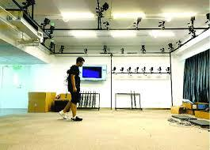
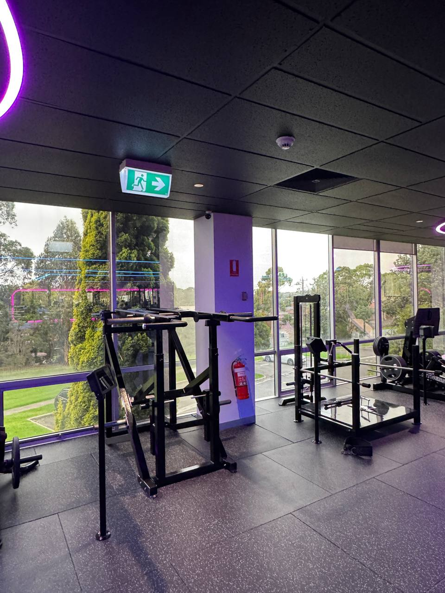
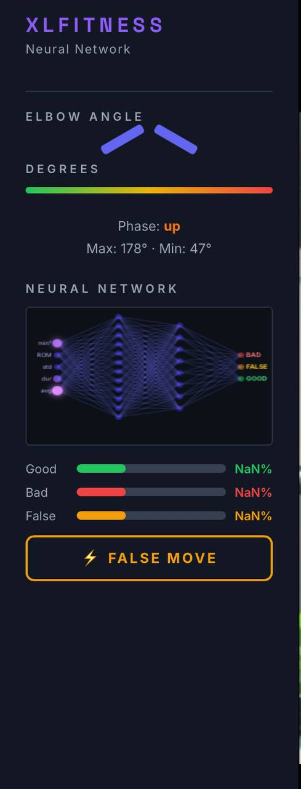
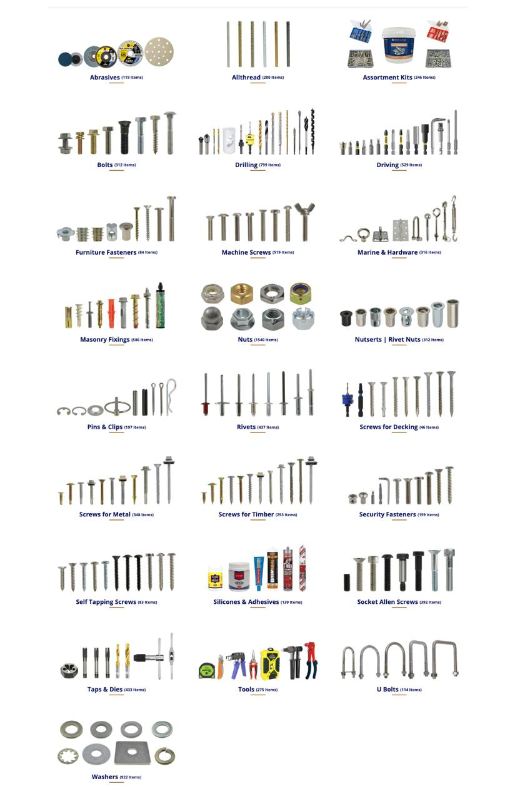
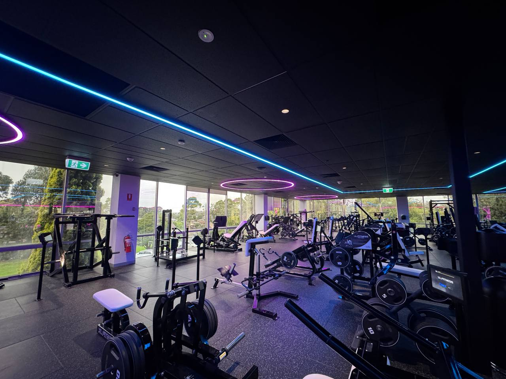
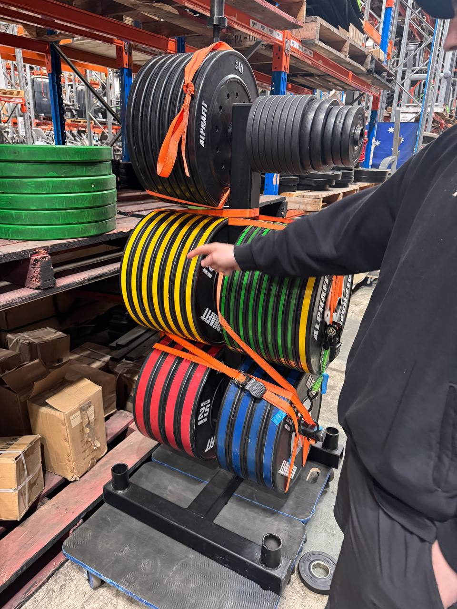

The XL Fitness
AI Overseer
Every idea explored. Every concept explained simply. Every technical decision justified. This is the complete guide to how we build an AI that watches the gym floor and knows exactly what every member is doing.
What Are We Building?
Imagine a person standing in the gym, watching every machine, knowing every member by face, counting every rep, reading every weight — all at once, all the time, never getting tired, never missing anything. That's the AI Overseer.
The goal is simple to say but hard to build: zero friction data capture. A member walks in, sits at a machine, and trains. The AI does everything else. It knows who they are. It knows what machine they're at. It reads the weight. It counts the reps. It scores the form. It logs everything to a database. The member never touches a tablet.
The system should feel like magic to the member. They just train. Behind the scenes, three cameras and four AI models are working in parallel to capture a complete, verified record of their session — better data than any personal trainer could manually collect.
What the System Produces
Verified Session Data
Every set, every rep, every weight — AI-verified. Not self-reported. Not estimated. Actually measured by computer vision.
Tamper-Proof Leaderboard
Because data is captured automatically, the leaderboard can't be gamed. Every number is real. Trust is restored.
Progress Tracking
Members can see their strength progress over weeks and months. The AI tracks volume, weight progression, and form improvement.
Coaching Intelligence
Coaches get real data to work with. They can see which members are progressing, who's plateauing, and who needs form correction.
Why This Is Worth Building
Most gyms have a data problem. Members self-report their workouts, and the data is unreliable — people round up, forget, or simply don't log at all. Studies show ~40% of manually logged gym data contains errors. You cannot build a coaching product, a leaderboard, or a personalisation engine on unreliable data.
The AI Overseer solves this at the source. It captures data automatically, at the point of exercise, with no member effort required. This is the foundation for everything else — the leaderboard, the coaching, the personalisation, the business model.
The Problem We're Solving
Before we explain any technology, we need to understand the problem deeply. Because if you don't understand the problem, the solution looks like overkill.
The Old Way — Honesty System
Member finishes a set
Tired, sweaty, mid-workout. The last thing they want is to pick up a tablet.
They type in their reps
Did they do 10 or 12? They round up. Did they use 80kg or 85kg? They guess. Data is already wrong.
Leaderboard fills with fake numbers
Everyone knows it. Trust collapses. Members stop caring. The product fails.
The AI Way — Zero Input
Member sits at machine
Camera detects them. Face ID confirms who they are. Weight stack is read. Session opens automatically.
They train
AI watches every rep. Counts them. Scores the form. Detects rest periods. No tablet interaction required.
Data is verified and published
Every number is AI-verified. Leaderboard is tamper-proof. Coaches have real data to work with.
How the System Works
The system has five layers. Each layer answers one question. Together they answer the only question that matters: "Who is at this machine, what are they lifting, and how many reps have they done?"
Total pipeline time: ~46ms — faster than a single video frame (33ms at 30fps). We process within 2 frames of the action happening.
Three Cameras Per Machine
Each machine has three cameras, each with a specific job:
| Camera | Position | Job | Why This Position? |
|---|---|---|---|
| Camera 1 | Overhead fisheye, ceiling | Person detection + tracking + zone matching | Overhead angle sees all machines simultaneously. One camera covers multiple machines. |
| Camera 2 | Side angle, column/wall | Pose estimation + rep counting | Side angle shows the full range of motion — the elbow bend, the extension. You can't count reps from above. |
| Camera 3 | Facing weight stack | Weight detection | Direct view of the weight plates and selector pin. No ambiguity about which weight is selected. |
What is a Bounding Box?
Before the AI can do anything — count reps, identify faces, read weights — it first needs to know where people are in the camera image. A bounding box is the answer.
A bounding box is just a rectangle drawn around a person. That's it. It's defined by four numbers: the x position (left edge), y position (top edge), width, and height — all measured in pixels from the top-left corner of the image.
Every other AI layer depends on bounding boxes. Face ID crops the face from the bounding box. Pose estimation runs inside the bounding box. Zone matching uses the bounding box centre point. Get detection right and everything else follows.
A Bounding Box is Just 4 Numbers
# This is everything YOLO outputs for one detected person { "bbox": [ 340, # x — how many pixels from the left edge of the image 210, # y — how many pixels from the top edge of the image 80, # width — how wide the person is in pixels 140 # height — how tall the person is in pixels ], "confidence": 0.94, # 94% sure this is a real person "class": "person" # YOLO detected a person (not a chair, not a weight plate) }
YOLO Output — Last Detection
{
"bbox": [
—, # x
—, # y
—, # width
— # height
],
"confidence": —,
"class": "person"
}
All Detections
Why Not Trace the Exact Outline?
You might wonder: why use a simple rectangle? Why not trace the exact shape of the person? The answer is speed. Tracing exact outlines (called segmentation) takes 10× more computation. A bounding box gives us 95% of the information we need in 1/10th the time.
| Method | Time Per Frame | Info Quality | Our Choice? |
|---|---|---|---|
| Bounding Box (YOLO) | ~15ms | Good — rectangle around person | ✓ Yes |
| Pixel Segmentation | ~150ms+ | Perfect — exact outline | ✗ Too slow |
| Simple Motion Detection | ~2ms | Poor — just "something moved" | ✗ Not enough info |
YOLO — You Only Look Once
YOLO is the AI model that scans the camera image and finds every person in it. It does this in about 15 milliseconds — fast enough to run 30 times per second on every camera.
The name "You Only Look Once" refers to how it works. Older detection systems would scan an image multiple times, checking different regions at different scales. YOLO scans the entire image in a single forward pass through a neural network. That's why it's fast enough for real-time video.
How YOLO Sees the World
YOLO divides the image into a grid (say, 20×20 cells). For each cell, it predicts: "Is there a person here? If yes, where exactly, and how confident am I?" All of this happens simultaneously across all cells in one pass.
Frame Stats
Confidence Threshold
Drag left to detect more people (risk false positives). Drag right to only show very confident detections.
Live Detections
We set the threshold at 70% because the gym environment is controlled — good lighting, fixed camera angles, people always in workout clothes. Too low and you get false detections (a weight plate might look like a person). Too high and you miss real people who are partially behind equipment.
The YOLO Code (Simplified)
from ultralytics import YOLO import cv2 # Load the model — this happens once at startup model = YOLO('yolov8n.pt') # 'n' = nano, fastest version # This runs 30 times per second def process_frame(frame): results = model(frame, conf=0.70, classes=[0]) # class 0 = person detections = [] for box in results[0].boxes: x, y, w, h = box.xywh[0].tolist() # bounding box conf = box.conf[0].item() # confidence score detections.append({ 'bbox': [int(x), int(y), int(w), int(h)], 'confidence': conf }) return detections # list of all detected persons in this frame
What is a Confidence Score?
Every AI prediction comes with a number between 0 and 1 that says "how sure am I?". This applies to person detection, face matching, weight reading — everything. Understanding confidence scores is fundamental to understanding how the system makes decisions.
Think of it like a human saying "I'm pretty sure that's Matt" vs "I think that might be Matt" vs "I have no idea who that is." The confidence score is the AI's way of expressing the same thing — as a number you can act on.
Session opens
to confirm
your card
person
The face looks familiar but we're not certain enough to open a session automatically.
Why Not Just Ask Everyone to Tap Every Time?
Because friction kills engagement. Every extra step a member has to take is a reason to skip logging. The goal is zero friction. The confidence system lets us be smart about when we ask — only when we genuinely need to. And every time we do ask, we get better training data. This is the flywheel (explained in Section 16).
System Architecture
Three cameras per machine feed three AI models. Everything merges in a FastAPI orchestration server and writes to Supabase. Outputs flow to the tablet, leaderboard, and member profile.
Code Repositories
Software Plan
The full software stack from camera feed through to leaderboard. What's built, what's in progress, and the full architecture across all layers.
Current Software State
| Component | What it does | Status | Location |
|---|---|---|---|
| alpha.html | Live kiosk demo — MoveNet pose + rule-based rep counter in browser. Fullscreen mode. | Working | pose/alpha.html |
| label.html | Training data labeler. Section-based — label start/end of each state, not frame-by-frame. Exports JSON. | Working | pose/label.html |
| session.js | Session manager. Tracks machine, member, reps, weight, rest time. Offline queue. Sends webhooks. | Built | pose/session.js |
| machine-config.js | Per-machine configuration: angles, thresholds, camera positions, rep detection parameters. | Built | pose/machine-config.js |
| NN v4 MLP | Basic neural network classifier. 75% accuracy on rep vs non-rep. Deployed and running. | Live (75%) | models/v4/ |
| FastAPI server | Orchestration layer. Receives pose events, weight data, face ID. Writes to Supabase. | Manus — Week 1 | gym-ai-weight repo |
| Supabase schema | Cloud database. Sessions, reps, machines, members tables. | In progress | Supabase cloud |
| LSTM v5 | Sequence model — analyses full rep motion over time. Needs 500+ training sequences. | Needs data | models/v5/ |
Software Architecture Layers
30fps MJPEG or WebRTC
Python/server-side
Phase 3
→ angle calc → LSTM
→ state + rep count
→ plate identification
→ kg total
→ member match
→ confidence score
Manages member identity (face + card tap fallback)
Fires webhooks to tablet / leaderboard
Writes completed sets to Supabase
Handles offline queue replay
How session.js Works
Core Flow
- Member identity received (from face AI or card tap event)
- Session created: machine_id + member_id + timestamp
- Pose events streamed in from alpha.html (rep, form, state changes)
- Weight value injected from weight AI (single value per set)
- On state transition to
rest_time: set record assembled and POSTed - Webhook fires to tablet endpoint: JSON payload with rep count + weight + form
- Session record written to Supabase when member leaves machine
Offline Queue
If the server is unreachable (network blip, server restart), session.js queues events in localStorage. On reconnect, the queue replays in order. No data is lost even during connectivity issues.
Card Tap Flywheel Integration
When a card tap event arrives during a session, session.js updates the member_id with certainty=100% and emits a face_training_event to the face AI pipeline for auto-labelling.
Webhook Event Format
This is the exact JSON that session.js sends to the tablet endpoint on every set completion and on significant state changes:
{
"machine_id": "lat_pulldown_01",
"timestamp_utc": "2026-03-19T10:23:45Z",
"event_type": "pose_estimation",
"session_id": "sess_abc123",
"member_id": "member_456",
"member_confidence": 0.97,
"payload": {
"event": "rep_completed",
"state": "good_rep",
"rep_number": 8,
"rep_quality": "good",
"confidence": 0.91,
"elbow_angle_min": 45.3,
"elbow_angle_max": 178.2,
"duration_ms": 2340,
"weight_kg": 50
}
}
// Set completion event (fires on rest_time transition):
{
"machine_id": "lat_pulldown_01",
"timestamp_utc": "2026-03-19T10:24:12Z",
"event_type": "set_complete",
"session_id": "sess_abc123",
"member_id": "member_456",
"payload": {
"set_number": 3,
"reps_total": 10,
"reps_good": 8,
"reps_bad": 2,
"form_score": 0.80,
"weight_kg": 50,
"duration_s": 42,
"rest_started_at": "2026-03-19T10:24:12Z"
}
}Training Data Plan
The AI is only as good as the data it's trained on. This section documents exactly how training data is collected, labelled, processed, and fed back into the model pipeline.
Filming Protocol
Camera Setup
- Angle: Side-on — the camera must see the full body profile. This is the view Camera 2 will have from the ceiling arm.
- Distance: 2–3m from the machine. Full body must be visible from head to foot.
- Height: Shoulder height or slightly above. Simulates the ceiling arm angle.
- Resolution: 1080p minimum. 4K preferred for labelling clarity.
- Frame rate: 30fps. Matches production camera spec.
- Lighting: Natural gym lighting — do NOT add extra lights. Train on real conditions.
What to Film (per session)
- Good reps: Full range of motion, controlled tempo, correct form — 10 minutes minimum
- Bad reps: Partial range, jerky motion, leaning back excessively — 5+ minutes
- False movement: Shifting in seat, looking around, adjusting clothing, coughing — 5+ minutes
- Rest periods: Sitting still between sets — let it run naturally
- Multiple people: Different body sizes, different clothing — diversity matters
- Approach/leave: Person walking up, sitting down, adjusting, leaving
Naming Convention
session_YYYYMMDD_HHMM_lat_pulldown.mp4
session_20260320_1430_lat_pulldown.mp4Labelling with label.html
Section-Based Approach
The labeler is NOT frame-by-frame. It works in sections — you mark the start and end of each state segment. This is 10× faster than frame-level annotation.
Keyboard Shortcuts
| Key | State |
|---|---|
0 | no_user_present |
1 | user_present_not_engaged |
2 | user_seated_engaged |
3 | good_rep |
4 | bad_rep |
5 | false_movement |
6 | rest_time |
Space | Play / Pause |
←→ | Step frame |
Enter | Mark segment end & save |
Output Format
The labeler exports JSON — a list of segments with timestamps and labels. Donkey processes this JSON to extract pose sequences and retrain the model.
How Donkey Processes Training Data
- Matt sends labelled JSON file via Google Drive or direct upload
- Donkey runs MoveNet over the original video at the timestamped segments
- 17 keypoints extracted per frame → angle sequences assembled per segment
- Sequences normalised (centre on hip, scale to torso height) for body-size independence
- Sequences added to training dataset (currently 445, target 500+)
- Model retrained on full dataset (v4 MLP or v5 LSTM)
- Accuracy benchmarked on held-out test set
- If accuracy improves → model deployed to
models/current/ - alpha.html hot-reloads new model on next page load
Training Milestones
| Milestone | Sequences | Model Unlocked | Expected Accuracy | Status |
|---|---|---|---|---|
| Current | 445 | v4 MLP | 75% | Live |
| LSTM threshold | 500+ | v5 LSTM (single joint) | 90%+ | ~55 away |
| High confidence | 1,000 | v5 LSTM (robust) | 92–95% | Phase 2 |
| Multi-joint | 2,000+ | v6 Full-body LSTM | 95%+ | Phase 2 |
| Per-machine fine-tune | 500 per machine | Machine-specific models | 97%+ | Phase 3 |
Supplemental Data — YouTube
What We Can Use
- Lat pulldown tutorial videos — often side-on, clear form demonstration
- "Good form vs bad form" comparison videos
- Gym POV videos where camera happens to be side-on
- Physical therapy / rehab channels — very controlled, clear movements
Caveats
- Background is different — model must generalise. Normalisation helps.
- Camera angles vary — only use clearly side-on footage
- Label quality — YouTube "good reps" may include minor form issues
- Copyright — training use only, no redistribution of footage
Model Roadmap
Limitation: MLPs treat each frame independently — no memory of what happened before. A LSTM understands that a rep is a sequence over time, not just individual moments.
Why LSTM: A lat pulldown rep is not a single pose — it's 2–3 seconds of continuous motion. LSTM remembers what happened 1 second ago and uses that context to judge what's happening now.
Neural Network Architecture
How the AI brain is structured — from raw camera pixels to "good rep" or "bad rep". This covers every layer of every model, why we chose the architecture, and how it evolves as we collect more data.
Pipeline Overview
↓ MoveNet Lightning (pre-trained, frozen)
17 keypoints × (x, y, confidence) = 51 values
↓ Feature extraction
[min_angle, ROM, std_angle, duration_s, avg_angle] ← v4 MLP input
[angle_t0, angle_t1, ... angle_t30] ← v5 LSTM input
↓ Classifier
Output: good_rep / bad_rep / false_movement
Model v4 — Current (MLP) ✅ Live
min_angle, ROM, std_angle,
duration_s, avg_angle
good_rep / bad_rep / false_movement
| Accuracy | 75.1% CV |
| Training sequences | 445 |
| Parameters | ~800 |
| Solver | Adam |
| Input type | Summary stats |
| Status | LIVE |
Model v5 — Next (LSTM) 🔜 Needs 500+ sequences
1 angle value per frame
Shape: (30, 1)
Dropout 0.2
Dropout 0.2
good_rep / bad_rep / false_movement
- ✅ Sees the full movement over time
- ✅ Detects momentum and velocity
- ✅ Catches jerky vs smooth reps
- ✅ Recognises timing patterns
- ✅ Handles variable rep duration
- Target accuracy: 90%+
- Unlock: 500+ labeled sequences
- Framework: TensorFlow / Keras
Model v6 — Phase 2 (Multi-Joint LSTM) 🔜 Planned
4 angles per frame:
elbow, shoulder, hip, torso
Shape: (30, 4)
Dropout 0.3
Dropout 0.2
All 7 states (incl. rest, seated)
- ✅ Back arch detection (hip angle)
- ✅ Shoulder shrug detection
- ✅ Torso lean / swing
- ✅ Full form score 0–100
- ✅ 7 output states (not 3)
- Target accuracy: 95%+
- Unlock: Phase 2 multi-person data
- Input joints: elbow + shoulder + hip + torso
Layer Summary Across All Models
| Model | Input | Hidden Layers | Output | Classes | Accuracy |
|---|---|---|---|---|---|
| v4 MLP | 5 summary stats | Dense(32) → Dense(32) | Dense(3) Softmax | 3 | 75% |
| v5 LSTM | 30 frames × 1 angle | LSTM(64) → LSTM(32) → Dense(16) | Dense(3) Softmax | 3 | 90%+ est. |
| v6 Multi-Joint | 30 frames × 4 angles | LSTM(128) → LSTM(64) → Dense(32) | Dense(7) Softmax | 7 | 95%+ est. |
| Weight Detector | Image ROI (bounding box) | Colour detection (HSV) | Weight in kg | N/A | TBD |
| Face Re-ID | Face crop (112×112) | ResNet50 backbone → embeddings | Member ID + confidence | N members | TBD |
Why These Layer Sizes?
These 5 numbers capture the most predictive aspects of a rep without needing temporal data. min_angle tells us how deep the pull was. ROM tells us range. duration_s catches rushers. std_angle catches jerky movement. avg_angle gives context.
With only 445 training examples and 3 output classes, a larger network would overfit — memorise training data instead of learning general patterns. 32×32 is the sweet spot: complex enough to learn the task, small enough to generalise. Tested larger (64×32) — no improvement.
good_rep, bad_rep, false_movement are mutually exclusive and cover every case. Adding more classes (e.g. partial_rep) splits training data further, hurting each class. 3 classes maps cleanly to the business logic: count it / flag it / ignore it.
Data Requirements Per Model
| Model | Min sequences | Currently have | Gap | Est. filming time |
|---|---|---|---|---|
| v4 MLP (live) | 200+ | 445 ✅ | Done | — |
| v5 LSTM | 500+ | 445 ⚠ | 55 sequences | ~1–2 gym sessions |
| v6 Multi-Joint | 1,000+ | 445 🔴 | 555 sequences | ~5–6 gym sessions, multiple people |
| Face Re-ID | 50+ faces × 20 images | 0 🔴 | Needs member photos | Phase 3 onboarding flow |
Physical Rig — The Mocap-Style Camera Grid
The infrastructure decision that makes everything else possible. Unistrut rails suspended from the existing T-bar ceiling grid. Adjustable drop arms. Ball-head cameras. No drilling, no damage, fully repositionable.


Prototype Phase (Phase 1 — RIGHT NOW)
No Rig Required
For Phase 1, there is no permanent installation. The goal is to prove rep counting works before committing to infrastructure.
- Mount: Portable clamp on the existing purple structural column adjacent to the Lat Pulldown
- Camera: Phone or tablet clamped at shoulder height, side-on angle
- Network: Wi-Fi or USB tethering — no PoE, no cabling
- Purpose: Prove the AI works, collect training data, demo to stakeholders
- Investment: ~$500 in hardware (clamp, phone holder, basic accessories)
- Timeline: This week — Matt installs, Donkey deploys alpha.html
Phase 2 Rig — Mocap-Style Ceiling Installation
The Concept
Unistrut P1000 steel channel rails are suspended from the existing T-bar ceiling framework using clip-on clamp brackets. Adjustable drop arms hang from the rails. Cameras mount on ball heads at the arm tips. Everything slides along the rails and locks in position with hand-tightened bolts. Tiles stay completely untouched.
Straight down
Face / Occupancy
Lateral arm, 45° angle
Rep counter / Form
Angled to stack
Weight reading
Seat zone
body (side-on)
stack
The Three Camera Arm Configurations
📷 Camera 1 — Occupancy / Face ID
- Short arm: 300mm, points straight down (or ±15° for angle)
- Fisheye lens: covers 4–6 machine zones per camera
- Position: central overhead in each machine cluster
- Function: detect occupancy, capture face as member sits
- Phase 3 — not required for Phase 1 or 2
📷 Camera 2 — Rep Counter (Critical)
- Longer lateral arm: 500–800mm extending sideways from rail
- Camera at end, angled 45° downward toward machine seat
- Achieves a true side-on profile view from ceiling position
- CRITICAL: Arm must extend toward the WINDOW SIDE so the camera looks INWARD — windows behind camera, member frontlit naturally
- This solves the backlight problem permanently
📷 Camera 3 — Weight Stack
- Medium arm: 300–500mm angled toward the weight stack
- Tight 4mm lens for close-range stack detail
- Positioned above the weight stack end of each machine
- Looks down at ~30–45° toward the plate column
- Required Phase 2 onwards
Ceiling Mounting Options (Preference Order)
| Option | Method | Drilling? | Tiles? | Notes |
|---|---|---|---|---|
| PREFERRED Option A: T-bar clamp |
Clip-on clamp brackets grip the existing metal T-bar rails | ❌ None | ✅ Untouched | Fully reversible. Tiles never removed. Best choice for any suspended ceiling grid. |
| Option B Threaded rod from plenum |
Threaded rod clamped to HVAC or light steel in the void above tiles | ❌ None into slab | 🟡 Small hole for rod | Used when T-bar isn't strong enough. Rod passes through tile hole — small, neat, can be patched. |
| Option C Wall-to-wall span |
Rails span between walls for perimeter machine zones | 🔩 Wall anchors | ✅ Untouched | For machines near walls where T-bar isn't above them. Walls are fine to drill into. |
Rail Specifications
Primary Rails
- Material: Unistrut P1000 — 41×41mm steel strut channel
- Spacing: 1.2–1.5m parallel runs across gym floor plan
- Finish: Powder-coated BLACK — invisible against dark ceiling void
- Length: 3m or 6m sections, joined with splice plates
- Load rating: 150kg per metre — massively over-engineered for cameras
Cross Rails & Arms
- Cross rails: 80/20 aluminium T-track for X-Y positioning fine adjustment
- Drop arms: Unistrut slotted channel or 25mm square steel tube
- Ball heads: Heavy-duty 3/8" ball heads (Manfrotto or equivalent)
- Adjustment: Loosen bolt → slide → tighten. No tools for minor repositioning.
- All hardware: Powder-coated black, stainless nuts/bolts
Final Product (Phase 4) — Full Gym Grid
120 Machines × 3 Cameras = 360 Cameras
- Rail grid spans entire gym floor, suspended from T-bar ceiling throughout
- 15 zones, 8 machines per zone, 3 cameras per machine
- Every camera on the same rail system — fully repositionable at any time
- Looks designed, not retrofitted — powder-coated black hardware against dark ceiling void
- Face ID live — Camera 1 network now identifying members automatically
- Weight tracking live across all 120 machines
- GymMaster NFC fully integrated — entry + machine use all unified
- Supabase has complete training history for all members from day one
- Custom member dashboard — training history, PBs, trends, form scores
Network Architecture
Zone PoE switches in ceiling void — not one central switch with 360 cables running to it. Short camera runs, one uplink per zone, 15 zones total.
Edge Server
UniFi USW-Pro-Max-24
Comms cabinet
UniFi USW-Pro-24-PoE
Ceiling void — Zone A
UniFi USW-Pro-24-PoE
Ceiling void — Zone B
UniFi USW-Pro-24-PoE
Ceiling void — Zone C
zones D through O
Hardware Spec
| Device | Model | Qty | Purpose |
|---|---|---|---|
| Zone PoE Switch | Ubiquiti UniFi USW-Pro-24-PoE | 15 | 24 PoE ports, ceiling void mounting, powers 24 cameras per zone |
| Core Switch | Ubiquiti UniFi USW-Pro-Max-24 | 1 | Aggregates 15 zone uplinks, connects to Mac Mini server |
| Edge Server | Apple Mac Mini M4 Pro 32GB | 1 | Runs all AI inference locally. Apple Neural Engine for hardware acceleration. |
| Cameras | PoE IP cameras (TBD per use case) | 360 | 3 types: fisheye (face), wide (rep), tight 4mm (weight) |
| NAS (backup) | Synology DS923+ | 1 | Local video backup, training data storage |
Why Zone Switches Win
Cable Length
3–5m per camera to zone switch vs 50–100m per camera to central switch. Less copper = significantly lower material cost + less signal loss.
Fault Isolation
If a zone switch fails, only 8 machines are affected. With one central switch, the entire gym goes down. Zone approach = inherently more resilient.
Phased Expansion
Add one zone switch at a time. Phase 2 = 1 zone switch. Phase 3 = 4 zone switches. Phase 4 = 15 total. No need to oversize central switch upfront.
Installation Speed
Short camera runs are trivial to install. A zone of 24 cameras can be cabled in a half day. Vs running 100m home-runs which require conduit, bends, and specialist cabling.
Cabling Spec
Camera to Zone Switch
- CAT6A (or CAT6 acceptable for <10m)
- 3–5m runs from arm-mounted camera down to ceiling void switch
- Velcro-bundled along drop arm, zip-tied to rail
- LSZH (low-smoke zero-halogen) jacket — fire compliance
Zone Switch Uplinks
- CAT6A 23AWG — 15 runs back to comms cabinet
- Run through ceiling void in trunking or conduit
- Maximum length 30–40m per zone — well within 100m spec
- Label both ends with zone ID
Power (Zone Switches)
- Each zone switch requires AC power in ceiling void
- Electrician runs one 10A circuit per zone to void
- 15 power circuits total (can share if zones are adjacent)
- Schedule with licensed electrician during Phase 2 install
Integration with Existing Systems
AI Overseer connects to the gym's existing software stack without replacing anything. GymMaster, Microsoft Dynamics, the tablet app, and Power BI all remain as-is.


| Existing System | How it connects | Result |
|---|---|---|
| GymMaster (NFC/Membership) | NFC tap at entry → GymMaster API → server notified of member arrival. Card tap at machine → immediate identity confirmation sent to session manager. | Member identity confirmed at entry. Card tap at machine = ground truth for face AI retraining. |
| Microsoft Dynamics (CRM) | API pull — member context pulled on session start. Training history, goals, programme. | AI can surface member-specific insights. "Your heaviest lat pulldown set this month." |
| Tablet App (other dev) | Webhook: Donkey POSTs set_complete JSON to an endpoint the other dev exposes. No rebuild needed — just add one route. | Tablet auto-fills reps and weight instead of member typing. Leaderboard auto-updates. |
| Power BI (Leaderboard) | Queries Supabase directly via connection string. No custom API needed — Supabase exposes a standard Postgres connection. | Leaderboard updates with AI-verified data. Real reps, real weights. Fully trustworthy. |
Integration Path — What the Other Dev Needs to Do
Endpoint Spec (what Donkey calls)
POST https://tablet-backend.xlfit.internal/api/ai-events
Headers:
Content-Type: application/json
X-AI-Overseer-Key: [shared secret]
Body: (see webhook event format in Section 04)What the Tablet Backend Should Do
- Receive the POST from Donkey's
session.js - Match
machine_idto the current active tablet session - Auto-fill the rep count and weight fields
- Display a confirmation animation ("AI logged your set ✅")
- Respond
200 OK— Donkey does not retry on success
GymMaster NFC Flow (Phase 3)
Cost Summary
Full investment for 120 machines, 360 cameras: approximately $143,000 AUD. Equivalent to 4.5 months of current membership revenue.
Phase Investment Table
| Phase | Machines | Cameras | Investment | Cumulative | Key milestone |
|---|---|---|---|---|---|
| Phase 1 | 1 | 3 | ~$1,550 | ~$1,550 | Rep counting working, stakeholder demo |
| Phase 2 | 5 | 15 | ~$9,000 | ~$10,550 | Full rig, LSTM live, weight tracking live |
| Phase 3 | 30 | 90 | ~$42,000 | ~$52,550 | Face ID, NFC integration, member dashboard |
| Phase 4 | 120 | 360 | ~$88,000 | ~$141,000 | Full gym, world's first AI-tracked gym |
Full Gym Cost Breakdown (~$143,000)
Revenue Context
At 230 members paying $32/week, annual revenue is ~$382,000. The entire AI Overseer system costs less than 5 months of current revenue.
This does not account for:
- Increased membership retention (reduced churn)
- Premium pricing headroom the tech enables
- Licensing revenue from other gyms
- New members attracted by the unique tech
Phase 1 Hardware List
| Item | Cost |
|---|---|
| Phone/tablet clamp mount (column) | ~$50 |
| Camera (repurpose existing phone or tablet) | $0 |
| USB-C power adapter + cable | ~$40 |
| Alphafit plates (already colour-coded — no cost) | |
| Phase 1 PoE camera (if phone inadequate) | ~$200 |
| PoE injector or small switch | ~$80 |
| Misc (cable ties, velcro, labels) | ~$50 |
| Total Phase 1 | ~$450–550 |
Team
A lean, AI-augmented team. Matt handles the physical world — hardware, filming, stakeholders. Donkey and Manus handle the digital world — code, AI models, infrastructure.
Responsibilities Matrix
| Area | Matt | Donkey | Manus | Forge 🔨 |
|---|---|---|---|---|
| Hardware sourcing | ✅ Owns | Advises | Advises | — |
| Physical installation | ✅ Owns | — | — | — |
| Filming training data | ✅ Owns | Directs | — | — |
| Labelling footage | ✅ Does | Processes | — | — |
| Rep counting AI | — | ✅ Owns | — | Heavy coding |
| Weight detection AI | — | — | ✅ Owns | — |
| FastAPI server | — | — | ✅ Owns | — |
| Supabase database | — | — | ✅ Owns | — |
| GitHub Pages deploy | — | ✅ Owns | — | — |
| Stakeholder demos | ✅ Presents | Builds demo | — | — |
| Business decisions | ✅ Owns | Advises | — | — |
Data Strategy
Data is the long-term moat. The system gets smarter every day it runs. Training data quality determines model quality. This section documents the full data lifecycle.
What Data We Collect
Per Set
- Machine ID
- Member ID (confirmed or probabilistic)
- Timestamp (start + end)
- Rep count (total)
- Good reps / bad reps split
- Form score (0–1)
- Weight loaded (kg)
- Set duration (seconds)
- Rest time before next set
Per Session
- Session ID (UUID)
- Entry time (from GymMaster)
- Machine sequence (which machines used)
- Total sets + total reps
- Average form score
- Total volume (reps × weight)
- Session duration
- Face confidence per machine
Training Data
- Video segments (labelled by state)
- MoveNet keypoint sequences (17 points × N frames)
- Elbow angle time series per rep
- State transition labels
- Face embeddings (member-linked)
- Card tap events (ground truth)
The Data Flywheel — In Detail
Pose AI Flywheel
- Matt films gym sessions at the Lat Pulldown
- Matt labels footage with
label.html(20 min per hour of footage) - Donkey processes JSON → extract MoveNet sequences
- Sequences added to training set (445 → 500+ → 1000+)
- Model retrains on larger dataset → higher accuracy
- Better model → fewer false counts → better member experience
- More machines in Phase 2 → more data from real gym use
- System becomes self-labelling as confidence thresholds rise
Face AI Flywheel
- Member taps card at machine → identity known with 100% certainty
- Camera 1 footage from that session auto-labelled with member ID
- Face model retrains on new ground-truth examples
- Confidence improves → fewer card taps required
- Each member builds a larger face training set over time
- After 3 months: most members identified without tapping
- Card tap becomes a rare fallback, not a daily requirement
Supabase Schema
-- Members table (synced from GymMaster)
CREATE TABLE members (
id UUID PRIMARY KEY,
gymmaster_id TEXT UNIQUE NOT NULL,
name TEXT NOT NULL,
face_ref TEXT, -- path to face embedding file
created_at TIMESTAMPTZ DEFAULT now()
);
-- Machines table
CREATE TABLE machines (
id TEXT PRIMARY KEY, -- e.g. 'lat_pulldown_01'
name TEXT NOT NULL,
config_json JSONB, -- camera positions, angle thresholds
zone_id TEXT,
active BOOLEAN DEFAULT true
);
-- Sessions table (one per machine visit)
CREATE TABLE sessions (
id UUID PRIMARY KEY DEFAULT gen_random_uuid(),
machine_id TEXT REFERENCES machines(id),
member_id UUID REFERENCES members(id),
face_confidence FLOAT, -- 0-1, how certain was the ID
started_at TIMESTAMPTZ NOT NULL,
ended_at TIMESTAMPTZ,
card_tapped BOOLEAN DEFAULT false
);
-- Sets table (one per set within a session)
CREATE TABLE sets (
id UUID PRIMARY KEY DEFAULT gen_random_uuid(),
session_id UUID REFERENCES sessions(id),
set_number INTEGER NOT NULL,
reps_total INTEGER NOT NULL,
reps_good INTEGER NOT NULL,
reps_bad INTEGER NOT NULL,
form_score FLOAT, -- 0-1
weight_kg INTEGER,
duration_s INTEGER,
rest_s INTEGER, -- rest after this set
started_at TIMESTAMPTZ NOT NULL
);Data Privacy & Compliance
What We Store
- Face embeddings (numerical vectors) — not raw images long-term
- Training images kept locally on NAS for model retraining only
- Workout data stored in Supabase (AU region)
- No biometric data leaves Australia
Member Rights
- Opt-out of face tracking at any time — card tap fallback always available
- Request deletion of all workout data
- View all data collected about them via member dashboard
- Training images auto-deleted after 90 days (embeddings only retained)
Current Status & Next Actions
Live status of every component. What's working, what's in progress, what's blocked. Updated March 20, 2026.
Component Status
✅ Done — Working
| Rule-based rep counter | Live on tablet |
| NN v4 MLP classifier | 75% — display only |
| Fullscreen kiosk demo | PWA, offline capable |
| Section-based labeler tool | 7 states, keyboard shortcuts |
| Session manager (session.js) | Built — awaiting server IP |
| Machine config system | lat_pulldown_01 configured |
| Overseer Bible | 20 sections, live |
| GitHub infrastructure | 4 folders, branches, .gitignore |
| Training data | 445 sequences collected |
| Brave Search (web research) | Donkey + Fetch enabled |
| Stakeholder approval | Phase 1 approved ✓ |
🟡 In Progress
| FastAPI orchestration server | Manus — building |
| Weight detection POC | Manus — custom plates TBD |
| LSTM v5 model scaffold | 55 sequences from target |
| Training data filming | Matt — gym access next week |
| Webhook integration (tablet) | Awaiting other dev endpoint |
| Camera rig contractor quote | To be arranged |
🔴 Phase 2 +
| Ceiling rig installation | Phase 2 — 5 machines |
| LSTM v5 deployed | Phase 2 — after 500+ seq |
| Multi-joint LSTM v6 | Phase 2 — 1000+ seq |
| Face ID system | Phase 3 |
| GymMaster NFC integration | Phase 3 |
| Member dashboard / app | Phase 3 |
| Full gym (120 machines) | Phase 4 |
Next Actions
| Priority | Action | Owner | When |
|---|---|---|---|
| 🔴 NOW | Film training data — good reps, bad reps, false movement. Side-on, shoulder height, 2–3m. 10 min each category minimum. | Matt | This week |
| 🔴 NOW | Label footage with label.html → export JSON → send to Donkey via Google Drive. | Matt | After filming |
| 🔴 NOW | Get server IP from Manus — need FastAPI endpoint URL for session.js to connect to. | Manus | End of week |
| 🟡 HIGH | Apply coloured tape to weight plates — Red=25kg, Blue=20kg, Yellow=15kg, Green=10kg, Grey=5kg. Vertical stripe on plate spine. | Matt | This week |
| 🟡 HIGH | Get rigging contractor quote — Phase 2 ceiling rig for 5-machine zone. Unistrut P1000, T-bar clamp, powder-coated black. | Matt | This week |
| 🟡 HIGH | Confirm webhook endpoint with other dev — what URL, what auth, what response format. | Matt | This week |
| 🟡 HIGH | Set up column clamp prototype — phone holder on purple column, side-on angle, verify alpha.html works from tablet on gym Wi-Fi. | Matt + Donkey | This week |
| 🟢 MEDIUM | Build LSTM v5 scaffold — architecture ready and waiting. Will train as soon as 500+ sequences arrive. | Donkey | This week |
| 🟢 MEDIUM | Order Phase 2 cameras + zone PoE switch — 15 cameras (5 machines × 3) + 1 UniFi 24-port PoE switch. | Matt | After quote approved |
| 🟢 MEDIUM | Source YouTube training data — Fetch finds side-on lat pulldown videos. Donkey downloads and extracts labelled sequences. | Fetch + Donkey | Ongoing |
Blockers & Risks
Active Blockers
- Training data gap: 445 sequences, need 500+. 55 sequences away from LSTM. Matt needs to film this week.
- Server endpoint: Manus hasn't delivered the FastAPI URL yet. session.js can't send data until this exists.
- Tablet webhook: Other dev hasn't confirmed endpoint spec. Can't complete integration without their route.
Risks to Monitor
- Backlight issue: Windows behind members will blow out the rep counter camera. Mitigated by Camera 2 arm extending toward the window — camera looks inward, windows behind it.
- Ceiling void space: If T-bar can't support rail weight, fall back to Option B (threaded rod from plenum steel). Contractor will confirm during site visit.
- LSTM accuracy: 75% (v4) may not be sufficient for production. Target 90%+ before Phase 2 live. Requires quality training data.
- Weight tape durability: Tape on plates may wear with heavy use. Build monthly tape check into maintenance schedule.
Camera Options — Full Comparison
A comprehensive guide to every camera type we might use across the XL Fitness AI system. Each type is evaluated for image quality, gym suitability, pricing, and which of our three camera roles it serves: Camera 1 (occupancy/face ID), Camera 2 (rep counter), Camera 3 (weight stack).
Camera Type 1: Turret / Eyeball Camera
A turret camera (also called an eyeball camera) uses a ball-joint mechanism that rotates freely in any direction during installation, then locks in place once aimed. The compact dome shell mounts flush to ceiling or wall; the inner ball swivels up to 360° horizontally and ~75° vertically before the grub screw is tightened.
This is the most popular camera type for AI computer vision deployments because the image sensor sits inside a protective dome, the form factor is small and discreet, and the lens is fixed at a precise angle — no moving parts to wear out after installation.
Our primary choice for Camera 2 (rep counter) and Camera 3 (weight stack). The side-on arm mount positions the camera at shoulder height, 2–3m from the machine — exactly what this camera type excels at.
✅ Pros
- Compact and discreet — barely visible on a gym ceiling or arm mount
- Highly adjustable during install — aim precisely then lock
- Excellent image quality — wide aperture lenses available (F1.0)
- No moving parts after install — zero mechanical wear
- PoE compatible — one cable does power and data
- Wide WDR support — handles bright windows vs dark interiors
❌ Cons
- Fixed after install — wrong angle requires physical re-aiming
- Not a true 360° view — covers ~110–120° field of view
- Requires precise initial placement planning
Recommended Models — Turret
| Model | Resolution | Key Feature | Low Light | WDR | Price (AUD) | Best For |
|---|---|---|---|---|---|---|
| Hikvision DS-2CD2347G2-LU | 4MP | ColorVu — full colour in near darkness | 0.0005 lux (F1.0 lens) | 130dB | $185–$220 | Camera 2, Camera 3 ⭐ |
| Hikvision DS-2CD2T47G2-L | 4MP | ColorVu bullet-turret hybrid | 0.001 lux | 120dB | $160–$190 | Camera 2, Camera 3 |
| Dahua IPC-HDW2849H-S-IL | 8MP (4K) | Smart Dual Light — auto IR/white switch | 0.001 lux | 120dB | $140–$170 | Camera 2 (budget 4K option) |
Camera Type 2: Fisheye 360° Camera
A fisheye camera uses an ultra-wide-angle lens (typically 1.0–1.8mm focal length) to capture a full 180° hemisphere in a single frame. Mounted on the ceiling, it sees the entire floor beneath it — including every person, machine, and walkway — in one image.
The raw fisheye image is heavily distorted (like looking into a crystal ball), but de-warping software mathematically corrects the distortion to produce flat, rectangular "virtual camera" views that pan and tilt digitally with no moving parts.
Ideal for Camera 1 (occupancy / face ID). One fisheye camera at ceiling height can cover 4–6 machines simultaneously, detecting when someone sits down, identifying their face, and tracking their movement across the zone.
✅ Pros
- One camera covers what 4–6 regular cameras would cover
- Zero blind spots within the coverage circle
- Single cable run to the ceiling — simpler install
- Software de-warping enables multiple virtual cameras from one feed
- Excellent for occupancy heat-mapping and flow analysis
- Long lifespan — no moving parts
❌ Cons
- Edge distortion — faces at the outer ring are stretched and harder for face ID
- Less pixel density per subject (resolution spread across huge area)
- De-warping software adds processing overhead
- Higher upfront cost than a single turret camera
Recommended Models — Fisheye
| Model | Resolution | Key Feature | Coverage | Price (AUD) | Best For |
|---|---|---|---|---|---|
| Hikvision DS-2CD63C5G1-IVS | 6MP | Onboard heat-mapping, 360° panoramic, IVS analytics | 4–6 machines | $450–$600 | Camera 1 — Zone occupancy ⭐ |
| Hikvision DS-2CD2955FWD-I | 5MP | 1.05mm lens, IR night vision, compact | 3–4 machines | $250–$320 | Camera 1 — Budget option |
| Dahua IPC-EBW81242 | 12MP | AI features onboard, excellent detail in de-warped view | 5–8 machines | $380–$480 | Camera 1 — Large zone coverage |
Camera Type 3: PTZ (Pan-Tilt-Zoom)
A PTZ camera uses motorised pan, tilt, and optical zoom mechanisms controlled remotely by software or a joystick. The camera physically rotates and zooms in on whatever direction is commanded.
NOT suitable for per-machine AI rep tracking. The fundamental problem is that a PTZ can only look in one direction at a time. If it's tracking Matt on the lat pulldown, it's blind to every other machine. Real-time rep counting requires a dedicated, always-on camera per machine.
Good use cases: general gym security, entrance monitoring, VIP oversight, and manager dashboards where a human is actively watching and controlling the camera.
✅ Pros
- Covers huge area when actively controlled
- Optical zoom gives extreme detail when needed
- Auto-tracking models follow a subject automatically
- Great for security patrols and incident review
❌ Cons
- Useless for real-time AI per machine — can't watch multiple machines simultaneously
- Expensive — $600–$850 per camera
- Moving parts wear out — motors, belts, bearings
- Higher maintenance requirement
- Adds latency vs fixed cameras
Recommended Models — PTZ
| Model | Resolution | Zoom | AI Feature | Price (AUD) | Use Case |
|---|---|---|---|---|---|
| Hikvision DS-2DE4A425IWG-E | 4MP | 25× optical | AI auto-tracking | $650–$850 | Security overview, entrance |
| Dahua SD49425XB-HNR | 4MP | 25× optical | AI auto-tracking, WizMind | $580–$750 | Security overview, entrance |
Camera Type 4: Bullet Camera
A bullet camera is a cylindrical fixed-direction camera designed for long-range coverage in a single direction. The elongated body houses a larger lens and more powerful IR illuminator, enabling clear images at 40–80m.
Best suited for perimeter and access control: entrances, exits, carparks, corridors, and stairwells. The visible form factor also acts as a deterrent.
Not recommended for machine-level AI tracking — too bulky for arm mounts, fixed angle limits close-range coverage, and the long IR throw is wasted at 2–3m distance.
✅ Pros
- Long-range IR or white-light illumination (40–80m)
- Highly visible — deterrent effect at entrances
- Weatherproof (IP67) — suitable for outdoor areas
- Excellent image quality for access points
❌ Cons
- Fixed angle — can't adjust field of view after install
- Bulky — looks out of place on a gym floor arm mount
- Poor at close-range machine tracking (2–3m)
- Long IR throw wastes energy indoors
Recommended Models — Bullet
| Model | Resolution | Key Feature | IR Range | Price (AUD) | Use Case |
|---|---|---|---|---|---|
| Hikvision DS-2CD2T47G2-L | 4MP | ColorVu full colour, 60m white light | 60m | $160–$195 | Entrance, carpark |
| Hikvision DS-2CD2T85G1-I8 | 8MP | AcuSense — person/vehicle classification | 80m | $180–$220 | Entrance, corridor |
Camera Type 5: Mini Dome
A mini dome camera is the most discreet fixed-camera form factor. The camera recesses into a small dome housing that flush-mounts to the ceiling, making it nearly invisible from floor level. Common in retail, hospitality, and premium interior spaces where aesthetics matter.
Suitable for close-range indoor coverage where the camera needs to blend into the environment. Could work for Camera 1 in zones with low ceilings where the fisheye option would be too close.
✅ Pros
- Extremely discreet — barely noticeable on a ceiling tile
- Professional, premium aesthetic — fits a high-end gym brand
- Ceiling flush-mount — no dangling hardware
- Vandal-resistant models available (IK10)
❌ Cons
- Usually fixed focal length lens — can't adjust zoom
- Shorter IR illumination range than bullet cameras
- Fixed angle after installation
- Harder to re-aim than a turret
Recommended Models — Mini Dome
| Model | Resolution | Key Feature | Price (AUD) | Use Case |
|---|---|---|---|---|
| Hikvision DS-2CD2143G2-I | 4MP | AcuSense — deep learning false alarm filter | $120–$150 | Low-ceiling zone, aesthetics |
| Hanwha QNV-8080R | 5MP | IR, vandal-resistant (IK10), corridor mode | $200–$250 | Premium look, high-traffic zone |
Camera Type 6: AI-Native Edge Cameras (Future Option)
AI-native cameras embed a neural processing chip directly on the camera board, allowing the camera to run full AI inference locally — no server required for initial processing. Rather than streaming raw video to a server, these cameras stream processed data (pose keypoints, bounding boxes, classification results).
Luxonis OAK-D is the flagship example: a stereo depth camera with an Intel Myriad X VPU onboard, supporting OpenVINO and custom neural network deployment via USB or PoE. It can run MoveNet pose estimation directly on the camera, streaming only the 17 keypoint coordinates to the server — not the raw video.
This is not our current approach — we centralise inference on the Mac Mini for flexibility and easier model updates. But OAK-D is worth monitoring for Phase 4 where 120-camera bandwidth could become a consideration.
Luxonis OAK-D Specs
- Sensor: 12MP colour + stereo depth
- AI chip: Intel Myriad X — 4 TOPS
- Frameworks: OpenVINO, ONNX, TensorFlow Lite
- Interface: USB-C or PoE variant
- Price: ~$300–$450 AUD
- Key advantage: Depth sensing — can estimate 3D joint positions
Camera Type vs Role — Full Comparison
| Camera Type | 📷 Cam 1 Occupancy / Face ID |
🏋️ Cam 2 Rep Counter |
⚖️ Cam 3 Weight Stack |
Security | Cost Tier |
|---|---|---|---|---|---|
| Turret / Eyeball | ⚠ OK | ✅ Best | ✅ Best | ⚠ OK | $$$ |
| Fisheye 360° | ✅ Best | ❌ No | ❌ No | ✅ Yes | $$$$ |
| PTZ | ⚠ Partial | ❌ No | ❌ No | ✅ Best | $$$$$ |
| Bullet | ❌ No | ❌ No | ❌ No | ✅ Best | $$$ |
| Mini Dome | ⚠ OK | ⚠ OK | ⚠ OK | ⚠ OK | $$ |
| AI-Native (OAK-D) | ⚠ Future | ✅ Future | ⚠ Future | ❌ No | $$$$ |
XL Fitness Specific Recommendation

XL Fitness gym floor — floor-to-ceiling windows (left) create severe backlight against the neon-lit dark interior. Camera 2 arm must extend toward the window wall so the camera points INWARD. The user is then front-lit by natural light — ideal for AI tracking.
✅ The Rule: Camera Looks Inward
- Mount the arm on the window side of the machine
- Camera faces away from the windows — toward the dark interior
- User's body is front-lit by window light
- Background is the dark gym interior — high contrast for AI
ColorVu Is Non-Negotiable
- The neon-lit dark interior areas have very low ambient light
- Standard cameras switch to IR (black & white) in low light
- ColorVu F1.0 lens maintains full colour at 0.0005 lux
- Full colour = better pose estimation accuracy (skin vs clothing vs equipment distinction)
- Camera 1 (per zone, ceiling): Hikvision DS-2CD63C5G1-IVS fisheye — one per 4–6 machines
- Camera 2 (per machine, arm mount): Hikvision DS-2CD2347G2-LU turret, ColorVu — one per machine
- Camera 3 (per machine, stack-facing): Hikvision DS-2CD2347G2-LU turret, ColorVu — one per machine
How We Scale — 1 Machine to Full Gym
The architecture is designed from the ground up for scale. Every decision in Phase 1 — the machine config system, the training data pipeline, the zone network design — was made knowing we're eventually deploying across 120 machines. Here's exactly how that happens.
The Transfer Learning Advantage
Building a new AI model from scratch for every machine would be impossible at scale. Transfer learning solves this: the heavy lifting (understanding human anatomy, detecting joints, recognising movement patterns) is done once, and only the machine-specific fine-tuning needs new data for each addition.
| Component | Transfer Rate | What This Means |
|---|---|---|
| MoveNet pose detection | 100% transfers | Google pre-trained on millions of human poses. Works on every machine instantly. |
| Rep rhythm / cadence detection | ~90% transfers | All resistance machines have concentric (effort) + eccentric (return) phases. Same rhythm logic applies everywhere. |
| State machine logic | ~80% transfers | no_user → present → engaged → resting → done applies to every machine. |
| Form quality classification | ~50% transfers | Good/bad rep patterns partially transfer. Machine-specific bad-rep cues (e.g. leaning back) need new labels. |
| Machine-specific joint geometry | 0% — must retrain | Each machine has different joint angles, range of motion, and movement plane. This is what the new training data teaches. |
The Machine Config System
Every machine in the system is defined by a JSON config file. No code changes are required to add a new machine — just create a new JSON file, drop in the training data, and the system automatically handles it.
{
"machine_id": "lat_pulldown_01",
"machine_name": "Nautilus Nitro Lat Pulldown",
"exercise_variants": ["Lat Pulldown", "Close Grip", "Wide Grip", "Reverse Grip"],
"primary_joint": "elbow",
"joints_tracked": ["shoulder", "elbow", "wrist", "hip"],
"rep_detection": {
"angle_top_threshold": 130,
"angle_bottom_threshold": 90,
"min_rep_duration_ms": 300,
"max_rep_duration_ms": 12000
},
"weight_stack_kg": [10,15,20,25,30,35,40,45,50,55,60,65,70,75,80],
"camera_2": {
"placement": "side-on",
"height_m": 1.3,
"distance_m": 2.5
},
"camera_3": {
"placement": "stack-facing",
"distance_m": 0.8
}
}Adding Machine 2 = create a new JSON file + 2–3 hours of training footage. That's it. The FastAPI server reads all config files at startup and automatically initialises the inference pipeline for each machine.
Config Fields Explained
machine_id— unique identifier, matches NVR camera tagprimary_joint— the joint angle used to detect repsangle_top/bottom_threshold— the ROM boundaries in degreesmin/max_rep_duration_ms— reject movements outside plausible rep timingweight_stack_kg— ordered list of available weight incrementscamera_2/3— physical install parameters for that machine's cameras
What Happens Automatically
- Server loads all machine configs on startup
- Camera streams are mapped to machine IDs by NVR channel number
- Rep detection thresholds apply automatically per machine
- Weight stack values are known — no manual entry by members
- Session data tagged with machine_id automatically
Zone Planning — 120 Machines in 15 Zones
The gym is divided into 15 zones of 8 machines each. Each zone is a self-contained network segment with its own PoE switch in the ceiling void, minimising cable runs and allowing zone-by-zone deployment.
Per-Zone Requirements
- 1× PoE switch — 24-port, 370W PoE budget (e.g. Ubiquiti USW-24-POE)
- 24× cameras (3 per machine)
- 24× Cat6 drops (3–5m per camera from ceiling void)
- 1× Cat6A uplink to core switch (up to 100m)
- 1× 1U patch panel in ceiling void (optional, neat cabling)
Zone Budget Estimate
- 24× cameras × $185 avg = ~$4,440
- 1× 24-port PoE switch = ~$600–$800
- Cabling + conduit + labour = ~$1,500
- Mounting hardware = ~$300
- Total per zone: ~$7,000–$8,000 AUD
- Full 15-zone gym: ~$105,000–$120,000
Training Data Strategy Per New Machine
| Machine # | Sequences Needed | Filming Time | Processing Time | Total Time to Live | Why |
|---|---|---|---|---|---|
| Machine 1 — Lat Pulldown | 500+ sequences | 4–6 gym sessions | 2–3 days | ~2 weeks | First model — building from scratch with no transfer baseline |
| Machine 2 (new) | 100–150 sequences | 2 gym sessions | 1 day | ~1 week | Transfer learning provides 70% of the model for free |
| Machines 3–10 (similar type) | 50–100 sequences | 1 gym session | 3–4 hours | 2–3 days | Each new machine fine-tunes an existing machine of the same category |
| Machines 10+ (same category) | 30–50 sequences | 30–45 minutes | 1–2 hours | Same day | Category models are mature — minimal adaptation needed |
Cross-Machine Transfer Examples
- Lat Pulldown → Seated Cable Row — both pulling movements, both seated, both track elbow flexion. ~75% transfers.
- Lat Pulldown → Chest Press — pushing vs pulling, joint mechanics differ. ~50% transfers.
- Leg Press → Leg Extension — both leg-dominant, seated. ~60% transfers.
- Cable Bicep Curl → Dumbbell Curl — same joint, different equipment visual. ~80% transfers.
Matt's Filming Protocol
- Camera position: side-on, shoulder height, 2–3m from machine
- Categories: good reps, bad reps (specific faults), setup/transition poses
- Minimum 10 minutes per category
- Multiple body types and sizes preferred for diversity
- Name file:
session_YYYYMMDD_machine_name.mp4 - Upload to Google Drive → Donkey labels and processes
How the Network Grows
Phase 1 — 1 Machine
Cable runs: 2–5m from column clamp mount
Bandwidth: ~12Mbps (3× 4MP streams @ 15fps)
Phase 2 — 5 Machines
Bandwidth: ~60Mbps (15× 4MP streams @ 15fps) — well within gigabit uplink capacity
Phase 3 — 30 Machines
Bandwidth: ~360Mbps — requires 10Gbps uplink from core switch to Mac Mini (use Mac Mini Thunderbolt → 10GbE adapter)
Phase 4 — 120 Machines (Full Gym)
Bandwidth: ~1.44Gbps — 10Gbps network backbone required
Alternatively: stream at 720p for older machines — halves bandwidth requirement
The Member Experience — Full Journey
Every touchpoint, every screen, every data point — from walking through the door to walking out. This is the full vision in practice. Phase 1 delivers the core (rep counting + weight detection). The complete journey is the Phase 3 vision.
1. Arrival at the Gym
- Member arrives at the gym entrance
- Taps NFC card on GymMaster reader at the gate
- Entry gate opens — GymMaster logs check-in
- System logs:
"Matt McArdle checked in at 07:23am" - GymMaster fires a webhook to the AI server: member_id + timestamp
- Server activates face ID watch mode — starts scanning all Camera 1 feeds for Matt's face
Data Logged at Check-In
- member_id:
matt_mcArdle_001 - checkin_time:
2026-03-16T07:23:14+11:00 - entry_method:
NFC card - face_watch_active:
true - last_session: pulled from Supabase for context
2. Finding a Machine
- Matt walks across the gym floor toward the lat pulldown area
- Camera 1 (ceiling fisheye) detects a person entering Zone A
- Face ID pipeline crops the face region and runs recognition
- Match: "Matt McArdle — 97% confidence"
- Server registers:
"matt_mcArdle_001 at lat_pulldown_01 — 07:25am" - Tablet at the machine wakes from standby and shows the welcome screen
📱 Tablet Display — Welcome Screen
3. Setting Up the Machine
- Matt adjusts the seat height for his frame
- He moves the selector pin to 50kg on the weight stack
- Camera 3 (stack-facing) scans the weight stack
- Computer vision reads: 2× blue plate (20kg each) + 1× yellow plate (10kg) = 50kg
- Tablet confirms: "Weight detected: 50kg ✓"
- Matt grips the overhead bar and gets ready to start
Weight Detection Detail
- Alphafit bumper plates already have built-in colour stripes — no preparation needed
- Bounding box pre-configured to the stack area only
- CV model counts visible plate colours above selector pin
- Sums to total kg loaded
- If confidence <90%, tablet shows "Confirm weight?" prompt
- Member can tap to confirm or manually enter if needed
4. The Set — Rep by Rep
- Camera 2 detects
user_seated_engagedpose — rep counter activates - Matt pulls the bar down — elbow angle drops from 148° to 66°
- LSTM model recognises signature:
good_rep in progress - Matt releases — elbow angle returns to 145°
- Rep 1 confirmed — ✅ Good rep
- Tablet shows: "1 rep | 50kg"
- Process repeats for all 10 reps
- Rep 8: Matt leans back too far — torso angle exceeds threshold
- LSTM flags:
bad_rep — torso_lean - Tablet shows: "⚠ Watch your form — sit more upright"
- Rep 10 complete — set finished
📱 Tablet — Mid-Set Display
5. Rest Between Sets
- Matt releases the bar and sits back
- Camera 2: no arm movement for 15 seconds → state transitions to
rest_period - Tablet shows: rest timer counting up — "Rest: 0:47 ↑"
- Optimal rest suggestion: "Recommended: 2:00 for strength goal"
- At 2:00 — tablet pulses gently: "Ready for Set 2?"
- Matt grips the bar again →
user_seated_engageddetected → Set 2 begins
📱 Tablet — Rest Timer
6. Session End
- Matt finishes 3 sets, stands up, steps away from the machine
- Camera 1: person leaving Zone A → session closes after 30-second timeout
- Session summary calculated on the server
- Record written to Supabase: session complete
- Leaderboard update: Matt's weekly volume increases by 1,500kg
- Personal best check: no new PB (last PB was 1,600kg)
- Machine tablet shows idle screen — ready for next member
Session Summary — Supabase Record
- Sets: 3 sets × 10 reps each
- Weight: 50kg throughout
- Volume: 1,500kg (30 reps × 50kg)
- Good reps: 28/30 (93.3%)
- Bad reps flagged: 2 (torso_lean on Set 1 Rep 8, Set 3 Rep 9)
- Form score: 81/100
- Rest time Set 1→2: 1:23
- Rest time Set 2→3: 1:47
- Total session duration: 12:34
7. What Matt Sees on His Phone (Phase 3+)
After completing the full workout and leaving the gym, the member receives an automated push notification and can open the XL Fitness app to see their session breakdown.
Push Notification
App Data Available
- Form score trend over time — plotted per machine
- Volume progression — weekly total kg moved
- Rep quality breakdown — good vs flagged
- Personal bests: max reps, max weight, max single-set volume
- Rest time trends — are they resting enough for their goal?
- Comparison to gym average — optional, opt-in
8. The Leaderboard — AI-Verified, Not Self-Reported
XL Fitness already has a leaderboard TV in the gym powered by Power BI. Currently, data comes from member self-reporting or manual entry. The AI system replaces this completely — every rep is verified by the AI, every kg is confirmed by computer vision. Members can't cheat the leaderboard anymore.
The existing leaderboard TV at XL Fitness — already in use. Phase 3 connects this to AI-verified Supabase data. The screen stays the same; the data source becomes tamper-proof.
The existing tablet at each machine — currently requiring manual data entry. Phase 1 fills this automatically via webhook from the AI server. No member input needed.
- Every completed set is a Supabase event within 2 seconds of completion
- Power BI queries Supabase on a 30-second polling interval
- Leaderboard refreshes in near-real-time as members work out
- Data is AI-verified — every rep confirmed, every kg computer-vision-confirmed
- Core value proposition: the gym's competitive culture is now fuelled by honest data
What the Leaderboard Shows
- Weekly volume leaders (total kg moved across all machines)
- Most consistent form scores (top form athletes)
- Machine-specific records (e.g. lat pulldown single-set max)
- Check-in streaks (most sessions per week)
- Personal best notifications when a PB is set live
Why This Is The Core Value Prop
- No other gym in Australia has AI-verified leaderboard data
- Members can compete on real effort, not inflated self-reporting
- Transparency builds trust with members
- Drives engagement — members come back to beat their score
- Data asset for XL Fitness — forms the basis for personalised coaching
The Complete AI System — How All 4 Parts Work Together
The Overseer is not one AI. It is four specialist AI subsystems — each doing one job with extreme precision — combined by an orchestration layer into a single coherent intelligence. This section explains every subsystem, how it works internally, and how they connect into the complete system.
The Four Subsystems
& Face ID
& Form Scoring
Detection
& Data Pipeline
Subsystem 1 — Person Tracking & Face ID
This is the identity layer of the Overseer. It answers the question: "Who is at which machine, right now?" Without this, the system can count reps but doesn't know whose reps they are. With it, every set is automatically attributed to the correct member — no card tapping, no logging in, no manual input.
How Person Detection Works
Camera 1 (the fisheye ceiling camera) captures a wide view of each machine zone. The person detection pipeline runs in 3 stages:
YOLO or MobileNet scans each frame
Outputs: bounding boxes around every person in frame
Result: "Person detected at coordinates (x:340, y:210, w:180, h:320)"
Stage 2 — Tracking (Re-ID across frames)
DeepSORT algorithm assigns each person a unique tracking ID
Maintains ID across frames even as person moves
Result: "Person #7 has been at machine lat_pulldown_01 for 3 minutes"
Stage 3 — Identity (Face/Body Re-ID)
Face embedding model (InsightFace/ArcFace) extracts 512-dim face vector
Compared against member database using cosine similarity
If similarity > 0.95: identified. Below: card tap prompt.
Result: "Person #7 = Matt McArdle (97.3% confidence)"
Person Tracking to Machine Assignment
Once a person is detected and tracked, the system needs to know which machine they're at. This is done by comparing the person's bounding box position against pre-configured machine zones — rectangles drawn on the camera view that correspond to each machine's footprint.
lat_pulldown_01: ROI = (x:100, y:80, w:200, h:350)
cable_row_01: ROI = (x:320, y:80, w:200, h:350)
chest_press_01: ROI = (x:540, y:80, w:200, h:350)
Person position check (every 5 frames):
Person #7 centroid: (x:195, y:210)
Overlaps lat_pulldown_01 zone: YES
→ "Matt McArdle is at lat_pulldown_01"
The Card Tap Fallback & Data Flywheel
When Face ID confidence is below 95%, the tablet shows: "Tap your card to begin." This is not a failure — it's a feature. The card tap provides 100% certain identity, which creates a perfect training label:
Member taps card → 100% certain = Matt McArdle
Server labels last 60s of video → "This face = Matt McArdle"
Training queue updated → next retrain improves confidence
Next time: 96% confidence → no tap needed
This is the data flywheel. Every card tap makes the AI smarter. Over time, taps become rare then unnecessary.
Neural Network: Face Embedding Model
Backbone: ResNet50 or MobileNetV3
→ Conv layers (feature extraction)
→ BatchNorm + PReLU activations
→ Global average pooling
→ FC layer → 512-dim embedding
→ ArcFace margin loss (training)
Output: 512 float vector (face signature)
Every enrolled member has their face embedding stored. At inference, the camera face is compared to all stored embeddings using cosine similarity (0.0 = completely different, 1.0 = identical).
similarity(new, Jane) = 0.31
similarity(new, Alex) = 0.28
Subsystem 2 — Rep Tracking & Form Scoring
This is the performance layer. Camera 2 watches the user's body from the side and answers: "Did they do a rep? Was it good form? How deep was the pull?" This is the most technically complex subsystem and the one furthest along in development.
The Pose Estimation Pipeline
↓ MoveNet Lightning (pre-trained, frozen)
Internal resize: 1920×1080 → 192×192
17 keypoints × (x, y, confidence)
[NOSE, L_EYE, R_EYE, L_EAR, R_EAR,
L_SHOULDER, R_SHOULDER, L_ELBOW, R_ELBOW,
L_WRIST, R_WRIST, L_HIP, R_HIP,
L_KNEE, R_KNEE, L_ANKLE, R_ANKLE]
↓ Feature extraction
Elbow angle: shoulder → elbow → wrist (v4, v5)
+ Shoulder angle (v6)
+ Hip angle / torso lean (v6)
↓ LSTM classifier
Output: good_rep / bad_rep / false_movement / rest / seated
The State Machine — What the AI Is Thinking Every Frame
Form Scoring — How 0–100 is Calculated
ROM < 80° → -30 pts
ROM < 100° → -15 pts
bottom_angle > 80° → -25 pts
duration < 0.8s → -20 pts (too fast)
duration > 12s → -10 pts (too slow)
Final: 0–100 form score
+ shoulder_depression check
+ torso_lean during pull
+ left/right symmetry
+ head position (no forward jut)
+ velocity profile (smooth vs jerky)
→ 95%+ accurate form score
Subsystem 3 — Weight Detection
Camera 3 has one job: read the weight stack and determine how many kilograms are loaded. This is Manus's domain. It uses computer vision and a clever physical trick — built-in colour stripes on Alphafit competition bumper plates — to make an otherwise difficult problem straightforward.
The Physical Setup — Alphafit Competition Bumper Plates

XL Fitness uses Alphafit competition bumper plates which follow the IWF/IPF international colour standard. The colour stripes are built directly into the outer edge of each plate — no tape application required. Camera 3 reads the colour stripe on the outer rim from a tight side-on angle.
Small plates (2.5kg, 1.25kg) identified by diameter size — too thin for reliable colour reading. Plate diameter detection handles these.
Detection Pipeline
↓ Crop to weight stack region only (ignore rest of image)
↓ Convert BGR → HSV colour space
HSV is robust to lighting changes unlike RGB
↓ Colour threshold masks per colour
Red mask: H=0-10 or H=170-180, S=150-255, V=100-255 (25kg)
Blue mask: H=100-130, S=150-255, V=100-255 (20kg)
Yellow mask: H=25-35, S=150-255, V=150-255 (15kg)
Green mask: H=40-80, S=100-255, V=80-255 (10kg)
Grey mask: H=0-180, S=0-60, V=80-180 (5kg)
Size detect: diameter <280mm = 2.5kg, <210mm = 1.25kg
↓ Count plates above selector pin position
↓ Sum plate weights
Output: {weight_kg: 50, plates: ["20kg", "20kg", "10kg"]}
When Weight is Read
The weight detector doesn't run 30 times per second — weight doesn't change that fast. It runs at 1–5fps and only when the machine is in the "user_seated_engaged" or "rest_period" states. When the selector pin moves (weight change), the detector runs immediately and updates. Weight is confirmed before each set begins.
Subsystem 4 — Orchestration & Data Pipeline
This is the glue layer — the traffic controller that receives outputs from all three subsystems and combines them into a single coherent session record. Built by Manus as a FastAPI server on the Mac Mini. Without this layer, the three AIs are isolated. With it, they form the Overseer.
Event Routing
Sub2 → POST /event: {event: "rep_completed", quality: "good", elbow_angle: 66.2}
Sub2 → POST /event: {event: "rep_completed", quality: "good", elbow_angle: 68.1}
Sub3 → POST /event: {event: "weight_detected", weight_kg: 50}
Sub2 → POST /event: {event: "rest_period_start", duration_so_far: 0}
... (10 reps × 3 sets) ...
Sub1 → POST /event: {event: "member_left", machine: "lat_pulldown_01"}
Orchestrator combines all events →
Session: Matt | lat_pulldown_01 | 3 sets | 30 reps | 50kg | 1,500kg volume
Data Pipeline — Session to Outputs
↓ Write to Supabase (PostgreSQL)
INSERT INTO sets (member_id, machine_id, reps, good_reps, weight_kg, volume, form_score, rest_s)
↓ Webhook to tablet (local LAN — instant)
POST http://tablet-ip/session-complete → tablet shows summary
↓ Leaderboard update (Power BI queries Supabase every 60s)
Matt's weekly volume +1,500kg → leaderboard refreshes
↓ Personal best check
Compare vs member.personal_bests → notify if new PB
↓ Training data archive (if opted in)
Clip saved to NAS for future model retraining
The Supabase Schema
sessions (id, member_id, machine_id, start_time, end_time, total_volume)
sets (id, session_id, set_number, reps, good_reps, weight_kg, volume, form_score, rest_s)
events (id, session_id, timestamp, event_type, payload JSONB)
machines (id, name, exercise_type, zone, camera_config JSONB)
leaderboard (VIEW — calculated from sets, refreshed every 60s)
The Complete System — All 4 Subsystems Together
📷 Camera 1 (fisheye) → video stream → Sub1: Person Tracking + Face ID
📷 Camera 2 (side-on) → video stream → Sub2: Pose Estimation + LSTM
📷 Camera 3 (stack) → video stream → Sub3: Colour Detection
(all running on Mac Mini M4 Pro)
Sub1 output: "Matt @ lat_pulldown_01" ────────────────→ ┐
Sub2 output: "10 good reps, form 81/100" ──────────→ │ Sub4: Orchestrator
Sub3 output: "50kg loaded" ──────────────────────→ ┘
Sub4 → Session record: {Matt, lat_pulldown_01, 10 reps, 50kg, 500kg vol, 81/100 form}
OUTPUTS (parallel, instant)
→ Supabase cloud DB
→ Tablet webhook (local LAN)
→ Leaderboard (Power BI ← Supabase)
→ Member app notification (future)
Machine Engagement — How the AI Knows You're Actually Using It
This is the most critical reliability question: how does the system know a person is genuinely using a machine versus walking past, sitting nearby, or doing something else entirely? This section explains the layered gate system, how engagement is detected per machine type, and how Phase 1 learnings feed into Phase 2 — and beyond.
Part 1 — The Engagement Problem
A gym floor is chaotic. At any given moment, there might be three people near the lat pulldown — one doing their set, one resting between sets sitting on the seat, and one walking past to grab their water bottle. The AI camera sees all three. Without a robust engagement detection system, it could count reps for the wrong person, or count movements that aren't reps at all.
The challenge: multiple people, multiple machines, windows causing backlight — the system must correctly identify who is using which machine
Consider the range of movements that happen near a machine that should never trigger rep counting:
Part 2 — The 6-Gate System
The system requires ALL 6 gates to pass before a rep is counted. Think of these as a pipeline — if any stage fails, the rep is not counted and the pipeline resets. Each gate adds a layer of protection against false triggers, and together they make false positives almost impossible in practice.
Zone
Pose
Motion
Gate
Continuity
Classification
Camera 1 — the ceiling fisheye — has a pre-configured bounding box drawn for each machine. When a person is detected, their body centroid (calculated from all visible keypoints) must fall inside this box. If the centroid is outside, all other gates are ignored and counting stays off entirely.
- In Phase 1: box is drawn manually during camera setup
- In Phase 2: AI-refined after initial setup based on observed usage patterns
- In Phase 3: AI-learned automatically from blank overhead video before opening
- Each machine gets its own named zone — zones do not overlap
Person detected at (x:402, y:187) — outside all zones ❌ → no gates evaluated
Just being inside the bounding box isn't enough — someone resting between sets will also be inside the box. Gate 2 checks whether the person's current pose matches what "actively using this machine" looks like. Every machine has a different engaged pose defined in its config.
The movement must cover a minimum joint angle range. Accidental movements — fidgeting, grip adjustments, small postural shifts — are small. Real reps cover 40° or more of joint angle. Anything less is rejected.
Minimum: 60° arc
Minimum: 80° arc
A valid rep must happen within a human-possible time window. Too fast and it's a jerk or camera artifact. Too slow and it's a position shift or someone sitting down.
A rep isn't just reaching the bottom position — it's a complete cycle. The system tracks the full movement arc: start position → peak contraction → return to start. The return must actually happen. This prevents counting someone who adjusts their grip mid-pull without completing the movement.
Arms extended
Full contraction
Back to start
Even if all five rule-based gates pass, the LSTM evaluates the complete movement sequence. The LSTM is
trained explicitly on false_movement examples — cases where the rules said "rep" but a human labeller said "not a rep."
This is the intelligence layer that catches what rules cannot.
Part 3 — Machine Config System: Every Machine Type
Every machine in the gym has a machine config — a JSON definition that tells the AI exactly what engagement looks like for that machine, which joint to track, and what angle thresholds define a rep. This config-driven approach is what makes the system scalable: adding a new machine type doesn't require retraining the full model — it requires writing a config and collecting a small amount of validation data.
- Wrists above shoulder height (gripping overhead bar)
- Person seated (hips in seat zone)
- Torso upright, not leaning forward
- Primary joint: Elbow
- Top angle: ~140–150° (arms extended up)
- Bottom angle: ~65–80° (bar at chest)
- Camera 2: Side-on, shoulder height, 2–3m away
"machine_id": "lat_pulldown_01",
"engagement": {"wrist_above_shoulder": true, "seated": true},
"primary_joint": "elbow",
"rep_direction": "vertical_pull",
"angle_top": 130,
"angle_bottom": 90
}
- Leaning slightly forward
- Hands at cable height (~waist/chest level)
- Arms extended forward toward the cable stack
- Primary joint: Elbow
- Top angle: ~160° (arms fully extended forward)
- Bottom angle: ~60–70° (elbows behind torso)
- Also tracks: torso lean (leaning back during pull = bad form)
- Seated upright
- Hands at shoulder height, elbows bent
- Ready to push handles overhead
- Primary joint: Elbow
- Bottom angle: ~80–90° (hands at shoulder, elbows bent)
- Top angle: ~160–170° (arms fully extended overhead)
- Form check: excessive lower back arch flagged
- Seated with back against pad
- Hands level with chest, elbows out to sides
- Elbows behind torso in starting position
- Primary joint: Elbow
- Bottom angle: ~70–80° (elbows back, hands at chest)
- Top angle: ~160° (arms extended forward)
- Camera 2: Side-on, captures horizontal movement clearly
- Seated, feet hooked under ankle pad
- Primary joint: Knee
- Start: Knee ~80° bent
- End: Knee ~160° extended (leg straight)
- Seated or prone, feet on top of pad
- Primary joint: Knee
- Start: Knee ~160° extended
- End: Knee ~30–40° bent (deep curl)
- Reclined/seated with feet elevated on large plate
- Feet significantly above hip height
- Torso reclined back in seat
- Primary joint: Knee
- Bottom angle: ~70–80° (knees bent, plate close)
- Top angle: ~160–170° (legs extended — NOT full lockout)
- Camera 2: Side-on, 1–1.5m height to track leg movement
- Full lockout flagged as bad form
- Seated, legs placed in machine pads
- Thighs in contact with pads (abductor: outer, adductor: inner)
- Torso upright
- Primary joint: Hip (hip keypoints, not elbow or knee)
- Abductor: legs move outward from neutral
- Adductor: legs squeeze inward toward neutral
- Camera: more overhead angle required — side-on misses lateral leg movement
- Prone (face down) on angled bench
- Feet hooked under ankle rollers
- Upper body hanging forward or extended
- Primary joint: Hip (torso angle vs. horizontal)
- Rep: Torso drops down → extends back up
- Uses torso angle relative to ground plane
- Requires careful camera positioning — must see torso angle clearly
Machine Configuration Reference Table
| Machine | Engagement Signal | Primary Joint | Top Angle | Bottom Angle | Camera Height |
|---|---|---|---|---|---|
| Lat Pulldown | Wrists overhead | Elbow | 130° | 90° | 1.3m |
| Seated Row | Hands at waist, leaning | Elbow | 160° | 65° | 1.2m |
| Shoulder Press | Hands at shoulders | Elbow | 165° | 85° | 1.4m |
| Chest Press | Hands at chest | Elbow | 160° | 75° | 1.1m |
| Leg Extension | Feet under pad | Knee | 160° | 80° | 0.8m |
| Leg Curl | Feet over pad | Knee | 165° | 35° | 0.8m |
| Leg Press | Feet on plate | Knee | 165° | 75° | 1.0m |
| Hip Abductor | Legs in pads | Hip | 50° apart | 10° | Overhead |
Part 4 — Phase 1 → Phase 2 → Phase 3 → Phase 4 Progression
The machine engagement system isn't deployed fully formed — it's built phase by phase, with each phase generating real-world data that makes the next phase smarter. This is the data flywheel in action: every machine installed teaches the system how to handle the next one.
- One machine: Nautilus Nitro Lat Pulldown
- Manual bounding box drawn in setup tool
- Wrist gate as the engagement signal
- Rule-based rep counting (reliable, deterministic)
- NN classifier for form scoring (75% accuracy)
- Single Camera 1 (ceiling fisheye) + Camera 2 (side-on)
- Does the bounding box approach work in a real gym with real lighting?
- What false triggers appear in practice (not just theory)?
- How accurate is the wrist gate for this machine type?
- What does variable gym lighting do to MoveNet keypoint confidence?
- What edge cases did we not anticipate?
- 5 machines across all different movement types
- Full ceiling camera rig installed
- Transfer learning from lat pulldown to new machine types
- Machine configs for each new machine (small labelled dataset per machine)
- Zone PoE switch infrastructure deployed
- Weight detection integrated (custom colour-coded plate system)
- Face ID field testing begins
- LSTM deployed — targeting 90%+ accuracy
- Does the config system scale to fundamentally different machine types?
- How does knee tracking accuracy compare to elbow tracking?
- What specific data requirements exist for leg machines (camera height, angle)?
- How reliable is weight detection with the custom plate colour system in practice?
- What are the real-world failure modes across 5 different machines?
- 30 machines — full coverage of major equipment areas
- AI-learned engagement zones (no longer manually drawing bounding boxes)
- Face ID live — members identified automatically on entry
- GymMaster NFC fully integrated — check-in triggers session start
- Multi-joint LSTM tracking full body posture per machine type
- Form coaching displayed on tablet at each machine in real time
- Data flywheel running — every session contributes to model improvement
- Every machine in the gym tracked simultaneously
- Multiple people at the same machine zone handled correctly via improved zone logic
- Visitor mode — non-member detection without face ID match
- PT coaching data — trainer and member sessions tracked together, separately attributed
- The system teaches itself continuously from the data flywheel — every workout makes it smarter
Part 5 — Multiple People Near the Same Machine
In a real gym, it's common for two people to be near the same machine at the same time — one working, one spotting, one waiting. The system must handle this correctly without double-counting or misattribution.
The spotter stands behind or beside the machine. They are outside the bounding zone for the seat. Gate 1 fails for the spotter — their centroid is not inside the occupancy zone. Only the person actually seated in the machine counts.
If two people are both inside the zone (e.g., changing over between sets), Gate 2 resolves this — only one person can match the engaged pose at a time. The system tracks the person who is actively in the machine position.
When one member finishes and another sits down: the session close logic detects that the previous member's pose is gone (Gate 2 fails), closes their session, then when the new member's engaged pose appears and face ID matches, a new session opens. Changeover handled automatically.
Member sits on the seat but isn't actively pulling/pressing — they're resting. Gate 2 (engaged pose) fails because wrists are not in the overhead position. The session stays open but rep counting pauses automatically until they re-engage.
Part 6 — What Happens When the AI Is Wrong
No AI system is perfect. The Overseer is designed to be wrong as rarely as possible — and to recover gracefully when it is wrong, using every mistake as training data that makes the system smarter.
All 6 gates working together make false positives extremely unlikely. Gate 6 (LSTM) is specifically trained on false movement examples to catch edge cases that pass the rule-based gates. If one does slip through:
- Member sees the rep appear on the tablet display
- They can tap "Not my rep" to flag it
- Flagged data is automatically labeled as
false_movementand queued for training - Next model update: LSTM learns this movement pattern → future false positives of this type eliminated
More common than false positives in the current system. Primary causes:
- Poor camera angle — another machine or person blocks the view mid-rep
- Occlusion — member's arm blocks their own elbow keypoint
- Low keypoint confidence — gym lighting variation causes MoveNet to drop keypoints
- Very fast rep — completed in under 300ms (rare, but possible for experienced lifters)
source: "manual" vs source: "ai")
so the data integrity is preserved — we can always see where the AI was confident vs where it needed human correction.
The tablet allows members to manually correct missed reps, creating training data that improves the model
Training Labels & Session Logic — The Definitive Reference
These are the exact 7 labels used to train the AI. Every piece of footage we collect is labelled with one of these states. The session logic defines exactly when a session starts, when it ends, and how the system handles the member temporarily leaving the machine.
The 7 Training Labels
Machine is completely empty. No person in the camera frame at the machine. Could be early morning, between members, or machine not in use.
Baseline state. Tells the system the machine is available. Prevents any accidental triggers from an empty machine. Establishes what "nothing happening" looks like.
_not_engaged
A person is in the machine zone but not actively using it. Standing near it, adjusting the seat, wiping it down, talking to someone nearby, or temporarily at the machine between sets (e.g. walking away to fill a water bottle).
Critical buffer state. Without this, any person near the machine could trigger the rep counter. This label teaches the AI "person present ≠ person using machine."
Person is seated at the machine in the correct position, gripping the handles or bar, ready to perform the exercise. Not moving yet — the setup moment before the first rep.
This is the trigger state. When the AI detects this, the rep counter activates. Weight is confirmed. Session set begins. The transition from Label 2 → Label 3 is the moment everything turns on.
Full range of motion, controlled tempo throughout. For lat pulldown: bar comes to chest level, controlled return to full extension. Back straight, no swinging. The textbook rep.
The primary success state. The AI learns the exact signature of a quality rep — the angle range, the timing, the smooth velocity curve. This is what we're counting and rewarding on the leaderboard.
uncontrolled_rep
A rep movement is performed but with poor form: excessive lean-back/swing to generate momentum, partial ROM (bar only comes halfway down), too fast with no control, one arm dominant, jerky rather than smooth.
Teaches the AI what a "cheat rep" looks like. Bad reps are flagged on the tablet ("Watch your form") and stored separately in the database — they won't count toward the leaderboard in Phase 3. Also injury prevention.
false_rep
Body movement while seated and engaged that is NOT a rep: adjusting grip, reaching for a towel or phone, talking with hand gestures, stretching shoulders, wiping face, adjusting clothing. The joint moves but it's not exercise.
The hardest problem to solve. False movements can trigger the angle thresholds and look like partial reps. This label explicitly teaches the AI: "elbow moved but it wasn't a rep." This is where we need the most training data.
Member is seated at machine, has completed a set, not performing reps. May be catching breath, checking phone, looking around, drinking water (if bottle is nearby). Still at the machine — hasn't left.
Enables rest time tracking — a unique data point no gym currently captures. Also prevents false_movement labels being applied during rest. The rest timer runs during this state and resets when user_engaged is detected again.
Session Logic — When Does a Session Start and End?
The fundamental rule:
A session starts when a member first engages the machine. A session ends when either: (a) a different member engages the machine, or (b) the member's label transitions to no_user_present AND they are detected at a different machine. Temporarily leaving to fill a water bottle does NOT end the session.
🚶 not_engaged ──────── sits down, grips ──────────────────→ 🪑 engaged ← SESSION STARTS
🪑 engaged ──────────── pulls bar ──────────────────────→ ✅ good_rep / ⚠ bad_rep
✅ rep done ────────── releases bar ─────────────────────→ ⏱ resting (rest timer runs)
⏱ resting ────────── grips bar again ──────────────────→ 🪑 engaged (next set begins)
⏱ resting ── walks away (water bottle) ────────────────→ 🚶 not_engaged SESSION PAUSED
🚶 not_engaged ──── returns to machine ─────────────────────→ 🪑 engaged SESSION RESUMES
🚶 not_engaged ─── walks to different machine ──────────────→ ⬜ no_user ← SESSION ENDS
🚶 not_engaged ─── new member sits down ────────────────────→ 🪑 new_engaged ← OLD SESSION ENDS / NEW SESSION STARTS
The "Water Bottle Rule" — Temporary Absence
- 🚰 Walks to water fountain and returns
- 🗣 Steps away briefly to talk to someone
- 📱 Walks a few steps to check phone
- 🧴 Goes to grab chalk or their bag nearby
- 🧘 Stretches beside the machine between sets
Logic: person leaves camera zone but has NOT been detected at another machine. Session held open for up to 5 minutes.
- 🏃 Walks to a completely different machine
- 👋 Leaves the gym floor entirely
- 🚪 GymMaster records check-out
- 👤 A different member sits at the machine
- ⏰ 5+ minutes with no return to the machine
Logic: person definitively at a different location, or timeout exceeded. Session written to database.
How to Film Each Label — Training Data Guide
| Label | Keyboard shortcut (labeler) | How to film it | Target % of dataset |
|---|---|---|---|
| ⬜ no_user_present | N |
Let camera run with machine empty. No effort needed — just leave it recording. | 10% |
| 🚶 user_detected_not_engaged | U |
Walk near the machine. Adjust seat height. Stand and look at the machine. Wipe it down. Walk past it. | 15% |
| 🪑 user_engaged | E |
Sit down, grip bar, hold still for 3–5 seconds before starting a set. Repeat at start of each set. | 10% |
| ✅ good_rep | G |
Perform proper form lat pulldowns. Full ROM (bar to chest), controlled tempo, back straight, no swinging. | 30% |
| ⚠ bad_rep / uncontrolled | B |
Deliberately bad form: lean way back and swing, only pull halfway, rush the movement, use momentum not muscle. | 20% |
| ⚡ false_movement | F |
Sit at machine in engaged position and: reach for phone, adjust grip, wave arm, scratch head, stretch shoulders. Do NOT pull the bar. | 10% |
| ⏱ resting | R |
Sit at machine after completing a set. Rest naturally — breathe, look around, check phone. 30–120 seconds. | 5% |
The Competitive Advantage — Why This Is Defensible
This section explains what makes the XL Fitness AI Overseer genuinely hard to copy, why the data moat grows over time, and how the system becomes a licensable product worth far more than any single gym.
The Four Moats
Every session at XL Fitness generates labeled training data. After 6 months of operation with 230+ members using 120 machines — we have millions of real-world labeled rep sequences. No competitor can buy this. No researcher can replicate it. It only exists because XL Fitness opened first.
More members → more data → better AI → better member experience → more members. Each rotation of this flywheel makes the system more accurate and harder to compete with. A competitor starting today would need 2+ years of real gym data to catch up — if they could get members to use their system at all.
Every machine we add to the Overseer builds a reusable model library. Lat pulldown → seated row takes 10% of the original effort. By Machine 20, we have a library of exercise models that transfers to any gym, any equipment brand, any configuration. The library is the asset — not just the software.
A competitor can copy the software. They cannot instantly replicate 360 cameras, a ceiling rig across 120 machines, zone switches, edge servers, and 2 years of integration with GymMaster, Dynamics, and existing tablets. The physical install is a switching cost that locks the system in.
Why No One Else Has Done This
This is a genuine gap in the market. Here's why it hasn't been built:
Early attempts used expensive proprietary hardware ($500-2000 per machine). The economics didn't work. We use $300 of cameras and a $3,500 server for the whole gym.
Sending gym video to the cloud costs $2,000-5,000/month and has 200-500ms latency — unusable for real-time rep counting. Edge computing (our approach) solves both problems.
Sending member video to external servers creates GDPR/privacy liability. Our edge-only approach keeps all video on-site — members' faces and bodies never leave the building.
Training a reliable rep counter requires thousands of labeled gym reps in real conditions. No public dataset exists. You have to build a gym first to get the data — a chicken-and-egg problem we're solving by doing both at once.
The Licensing Opportunity
XL Fitness is the proof of concept. Once the system is running across 120 machines with verified accuracy, it becomes a product that can be licensed to other gyms globally.
First Mover Advantage
XL Fitness has a window of approximately 18–24 months before a well-funded competitor could replicate this system. The first-mover advantages that expire after that window:
- ✅ Brand recognition — "Australia's first AI-tracked gym" is a permanent claim once opened
- ✅ Training data lead — 2 years of real member data is irreplaceable
- ✅ Partner relationships — GymMaster, the tablet dev, equipment suppliers
- ✅ Member loyalty — members who joined for the AI experience are unlikely to leave
- ✅ Refined system — by Phase 4 the system has been debugged across 120 machines — a competitor starts at zero
The Simple Pitch
"We're not building a gym with AI features.
We're building an AI platform that runs in a gym."
The gym is the proof of concept and the data source. The AI platform is the product. XL Fitness is the first customer of its own technology — and when it's proven, every premium gym in Australia becomes a potential licensee.
The Tracking Problem
YOLO detects people in a single frame. But video is a sequence of frames. Without tracking, YOLO has no memory — it sees 30 completely fresh images every second. This creates a critical problem.
Imagine you're watching a security camera. Every second, someone wipes your memory. You see people, but you don't know if the person in front of you is the same person you saw a moment ago. That's YOLO without tracking. It detects people, but it can't follow them.
With DeepSORT active, each person keeps their ID number as they move. Person #1 stays Person #1 across all frames.
Why This Matters
If Person #7 changes ID every frame, we can't link their face to their reps. We can't link their reps to their weight. The entire system falls apart. Persistent IDs are the foundation of everything.
ID Stability Score
How DeepSORT Keeps Track
DeepSORT solves the tracking problem using two simultaneous strategies: predict where a person will be next frame, and check if the new detection looks the same as the tracked person. Both must agree for an ID to be maintained.
Kalman Filter — "Where Will They Be Next Frame?"
A Kalman Filter is a mathematical prediction algorithm. Given a person's current position and velocity, it predicts where they'll be in the next frame. This prediction is used to pre-match new detections before even looking at appearance.
Dashed = Kalman prediction. Solid = actual position. The filter learns velocity and corrects itself.
# Kalman Filter — simplified concept # Current state: where is Person #7 right now? current_position = (340, 210) current_velocity = (-2, 0) # moving 2px left/frame # Prediction: where will they be NEXT frame? predicted_next = ( current_position[0] + current_velocity[0], current_position[1] + current_velocity[1] ) # predicted_next = (338, 210) # DeepSORT pre-matches detections near (338, 210) # This dramatically reduces the search space
Appearance Descriptor — "Does This Look Like the Same Person?"
Even if the Kalman Filter predicts the right position, DeepSORT also checks: does the person in this new bounding box look like the same person we were tracking? It uses a small neural network to create a 128-number "appearance vector" for each detection.
Cosine similarity between appearance vectors. High = same person. Low = different person.
Hungarian Algorithm — "Best Global Assignment"
When there are multiple tracked people and multiple new detections, the Hungarian Algorithm finds the globally optimal assignment. It's not just "match the closest" — it considers all possible assignments and finds the one that minimises total error.
Left column = existing tracked IDs. Right column = new YOLO detections. Lines show the optimal assignment.
The Result — Persistent IDs Across All Frames
Combining Kalman prediction + appearance matching + Hungarian assignment gives us stable, persistent IDs. Person #7 stays Person #7 for their entire gym session — even if they stand up, walk around, and sit back down.
# DeepSORT output — every frame tracked_persons = [ { "id": 7, "bbox": [340, 210, 80, 140], "confidence": 0.94 }, { "id": 12, "bbox": [580, 190, 75, 135], "confidence": 0.89 }, { "id": 3, "bbox": [120, 240, 85, 145], "confidence": 0.91 }, ] # These IDs are stable across ALL frames # Person #7 was #7 last frame, and will be #7 next frame
Which Machine Is Person #7 At?
We know Person #7 exists and where they are in the camera image. Now we need to know which machine they're at. Zone matching is the bridge between "a tracked person" and "a person at a specific machine."
Every machine has a zone polygon drawn around it in camera pixel coordinates. These are just rectangles (or irregular shapes) that represent the area where someone sitting at that machine would appear in the overhead camera image. If Person #7's centre point falls inside the lat_pulldown_01 polygon, they are assigned to that machine.
Drag the person (white dot) around the floor to see zone assignment change in real-time.
Zone Assignment
# Zone config — set up once, never changes machine_zones = { "lat_pulldown_01": { "polygon": [ (80, 60), (180, 60), (180, 160), (80, 160) ] }, # ... all 120 machines defined here } # Check which zone a person is in def get_machine(person_centre): for machine, zone in machine_zones.items(): if point_in_polygon(person_centre, zone["polygon"]): return machine return None
Zone polygons are defined once when the system is installed. You open a calibration tool, click around each machine on the overhead camera image, and save the polygon. This takes about 30 minutes for 120 machines. After that, the system never needs to be recalibrated unless machines are moved.
Why Pose Estimation?
We know who is at the machine. We know which machine it is. Now we need to count their reps and score their form. A bounding box alone can't do this — it just tells us a rectangle exists. Pose estimation goes deeper: it finds the exact position of every joint in the body, 30 times per second.
Think of it like an X-ray that updates 30 times per second. Instead of seeing a person as a rectangle, the AI sees them as a skeleton — 17 joints connected by bones. The elbow bends. The weight rises. The elbow extends. The weight lowers. That's a rep. You can only detect this pattern if you're tracking the elbow position over time.
A rep is a movement pattern. The elbow bends, the weight rises, the elbow extends, the weight lowers. To detect this pattern, you need to track the elbow position over time. Pose estimation gives you the elbow position. The LSTM neural network (next section) detects the pattern.
17 Body Landmarks
Nose, eyes, ears, shoulders, elbows, wrists, hips, knees, ankles — every major joint tracked 30× per second.
Joint Angles
From 3 points (shoulder, elbow, wrist) we calculate the elbow angle. A lat pulldown goes from ~160° extended to ~40° contracted.
Movement Sequences
30 frames of joint positions = a movement sequence. The LSTM reads this sequence and classifies it as a rep, rest, or bad form.
Why MoveNet?
MoveNet Lightning runs in ~5ms per frame. OpenPose takes ~100ms. We have 33ms per frame at 30fps — MoveNet is the only option that fits.
| Model | Speed | Accuracy | Our Choice? |
|---|---|---|---|
| MoveNet Lightning | ~5ms | Good | ✓ Yes |
| MoveNet Thunder | ~15ms | Better | Fallback |
| MediaPipe Pose | ~20ms | Better | Fallback |
| OpenPose | ~100ms | Best | ✗ Way too slow |
At 30fps, we have 33ms per frame. MoveNet Lightning at 5ms leaves 28ms for everything else. OpenPose at 100ms would mean we can only process 10fps — not enough for smooth rep counting.
MoveNet Live Pose Demo
This is exactly what Camera 2 sees — a person's body with 17 keypoints tracked in real time. The green dots are joints. The lines connecting them are bones. Click any joint to learn what it tracks and why we use it.
Selected Joint
Click any joint on the pose to see its details
Live Keypoint Data
Rep Counter
The 17 Keypoints — What Each One Does
MoveNet outputs 17 (x, y, confidence) triplets per frame. For the gym, we only use the ones relevant to each exercise. Here's the full map:
We don't use all 17 keypoints for every exercise. For a lat pulldown, we primarily use shoulders, elbows, and wrists. For a leg press, we use hips, knees, and ankles. Using only the relevant keypoints makes the model more accurate and faster.
How We Calculate Joint Angles
import numpy as np def calculate_angle(a, b, c): """ Calculate the angle at joint b, given three points a, b, c. Example: a=shoulder, b=elbow, c=wrist → gives elbow angle """ a = np.array(a) # shoulder [x, y] b = np.array(b) # elbow [x, y] c = np.array(c) # wrist [x, y] # Vector from elbow to shoulder, and elbow to wrist radians = np.arctan2(c[1]-b[1], c[0]-b[0]) - \ np.arctan2(a[1]-b[1], a[0]-b[0]) angle = np.abs(radians * 180.0 / np.pi) if angle > 180.0: angle = 360 - angle return angle # returns degrees, e.g. 45.3 # Usage: lat pulldown elbow angle elbow_angle = calculate_angle( keypoints['left_shoulder'], keypoints['left_elbow'], keypoints['left_wrist'] ) # elbow_angle = 45.3 → arm is contracted (pulling down) # elbow_angle = 162.7 → arm is extended (top of movement)
How the LSTM Counts Reps
MoveNet gives us joint positions. But a single frame of joint positions doesn't tell us if a rep just happened. A rep is a sequence — extended → contracted → extended. The LSTM neural network reads sequences. That's its entire job.
LSTM stands for Long Short-Term Memory. It's a type of neural network designed specifically to understand sequences over time. Unlike a regular neural network that looks at one snapshot, an LSTM reads a window of 30 frames (1 second of movement) and asks: "What movement pattern just happened?"
You might think: "just count how many times the elbow angle crosses 90°." The problem is that people pause mid-rep, adjust their grip, or shift position. A simple threshold would count these as reps. The LSTM learns the full movement pattern — the speed, the range, the rhythm — and is far more robust to these edge cases.
Input: 30 frames of elbow angle data
The 7 States the LSTM Classifies
The LSTM doesn't just say "rep" or "no rep." It classifies every 30-frame window into one of 7 states. This gives us much richer data than a simple counter.
| State | What It Means | What We Do |
|---|---|---|
| good_rep | Full range of motion, controlled speed, proper form | Count rep, score 100%, log to leaderboard |
| bad_rep | Partial range, too fast, or compensating with wrong muscles | Count rep, score <80%, show form warning on tablet |
| user_seated_engaged | Person is at machine, actively moving | Keep session open, watch for rep pattern |
| user_present_not_engaged | Person is at machine but not moving (resting between sets) | Start rest timer, keep session open |
| false_movement | Movement detected but not a rep (adjusting grip, coughing) | Ignore — do not count |
| rest_time | Person is still, resting between sets | Log rest duration, suggest next set |
| no_user_present | Machine is empty | Close session, free the machine slot |
The LSTM Architecture
import tensorflow as tf # Input: 30 frames × 17 keypoints × 3 values (x, y, confidence) # = 30 × 51 = 1,530 numbers per inference model = tf.keras.Sequential([ # First LSTM layer — reads the sequence tf.keras.layers.LSTM(128, return_sequences=True, input_shape=(30, 51)), tf.keras.layers.Dropout(0.3), # Second LSTM layer — deeper pattern recognition tf.keras.layers.LSTM(64), tf.keras.layers.Dropout(0.3), # Dense layers — final classification tf.keras.layers.Dense(64, activation='relu'), tf.keras.layers.Dense(7, activation='softmax') # 7 states ]) # Output: [0.02, 0.94, 0.01, 0.01, 0.01, 0.00, 0.01] # bad good seated rest false rest none # → good_rep at 94% confidence
Why Face ID?
We know someone is at the lat pulldown. We know they're doing reps. But whose reps are they? This is where Face ID comes in. It's the link between an anonymous tracked person and a named member profile.
Why Not Just Use the NFC Card?
Members tap their card at the entry gate — that tells us they're in the building. But once they're on the gym floor, we don't know which machine they're at. A member could be at any of 120 machines. Face ID is the bridge between "Matt is in the building" and "Matt is at machine #7 right now."
The Fallback
Face ID is not the only identification method — it's the primary one. If confidence is below 95%, the tablet shows "Tap card to confirm." This fallback means the system never fails to identify a member. And every card tap makes the face model smarter.
The AI does not store photos of members. It stores mathematical vectors (512 numbers). You cannot reconstruct a photo from a vector. All face processing happens on the local Mac Mini — no face data ever leaves the gym. This is compliant with the Australian Privacy Act.
What is a Face Embedding?
The AI doesn't store photos of members. It stores numbers. Specifically, 512 numbers that mathematically describe the unique geometry of a face. This is called an embedding. Two photos of the same person produce very similar 512-number vectors. Two photos of different people produce very different vectors.
Think of it like a fingerprint — but instead of ridges and whorls, it's measuring the distance between your eyes, the width of your nose, the shape of your jawline, the distance from your eye to your mouth. These geometric relationships stay consistent across different lighting, angles, and expressions.
The 512 Embedding Dimensions (First 20 shown)
The Enrolment Process
# Enrolment — run once per member when they join from insightface.app import FaceAnalysis import numpy as np app = FaceAnalysis(providers=['CoreMLExecutionProvider']) # Mac M4 optimised app.prepare(ctx_id=0, det_size=(640, 640)) # Take 5 photos of Matt, extract embeddings, average them embeddings = [] for photo_path in matt_photos: img = cv2.imread(photo_path) faces = app.get(img) if faces: embeddings.append(faces[0].embedding) # 512-number vector # Average embedding is more robust than a single photo matt_embedding = np.mean(embeddings, axis=0) # Store in Supabase { "member_id": "matt_mcArdle", "embedding": matt_embedding }
The Matching Process
Every time a new face is detected in a bounding box, the system extracts its embedding and compares it against every enrolled member. The comparison uses cosine similarity — a mathematical measure of how similar two vectors are.
The Matching Code
from sklearn.metrics.pairwise import cosine_similarity import numpy as np def identify_member(live_embedding, enrolled_members): best_match = None best_score = 0 for member in enrolled_members: score = cosine_similarity( live_embedding.reshape(1, -1), member['embedding'].reshape(1, -1) )[0][0] if score > best_score: best_score = score best_match = member # Decision based on confidence if best_score >= 0.95: return { "action": "auto_open", "member": best_match } elif best_score >= 0.80: return { "action": "tap_to_confirm", "member": best_match } elif best_score >= 0.60: return { "action": "please_tap_card", "member": None } else: return { "action": "unknown_person", "member": None }
The System Gets Smarter Every Day
The most powerful thing about this system is not what it can do on day one — it's what it becomes over time. Every card tap creates a perfect training label. Every training label improves the model. A better model needs fewer card taps. Fewer card taps means less friction. Less friction means more data. More data means a better model. This is the flywheel.
The face model has only 3–5 enrolment photos per member. Accuracy is moderate (~75%). Most members tap their card most sessions. Every tap creates a perfect training label: this face = this member_id. The model retrains nightly.
Reading the Weight Stack
Camera 3 faces the weight stack directly. The AI reads which weight is selected by detecting the position of the selector pin relative to the colour-coded weight plates. This is computer vision at its most practical.
Weight stacks use a pin that slides between plates. The pin position determines the weight. Camera 3 captures a clear view of the stack, and a trained YOLO model detects the pin position and reads the weight label on the selected plate.
Camera 3 View
How the Weight Detection Works
Colour Segmentation
Each weight plate is a different colour. The AI first identifies all plates by colour. This gives it a map of the entire stack.
Pin Detection
A second YOLO model detects the selector pin — the small metal rod that slides between plates. Its vertical position determines the selected weight.
Weight Calculation
The pin position is mapped to the weight stack configuration (stored in machine-config.js). If the pin is between plate 4 and plate 5, the weight is 60kg.
Confidence Check
If confidence is below 90%, the system flags the reading as uncertain and asks the member to confirm via the tablet.
All Layers Together
Every 33 milliseconds (one video frame), all five layers run in parallel. Here's what happens from the moment a camera captures a frame to the moment a rep is logged in the database.
Camera Setup & Placement
The AI is only as good as the images it receives. Camera placement is one of the most critical decisions in the entire system. Get it wrong and no amount of AI can fix bad angles.
Camera 1 — Overhead
Position: Ceiling mount, fisheye lens, 3–4m height.
Job: Person detection, tracking, zone matching.
Why overhead? One camera covers 8–12 machines simultaneously. Occlusion is minimal from above.
Camera 2 — Side Angle
Position: Column or wall mount, 1.5–2m height, side-on to machine.
Job: Pose estimation, rep counting, form scoring.
Why side? The full range of motion (elbow bend) is only visible from the side.
Camera 3 — Weight Stack
Position: Direct facing mount, 0.5m from weight stack.
Job: Weight detection, pin position reading.
Why direct? Needs a clear, unobstructed view of the plates and pin.
Recommended Hardware
| Camera | Model | Resolution | Key Feature | Price |
|---|---|---|---|---|
| Camera 1 | Hikvision DS-2CD2347G2-LU | 4MP | Fisheye, 180° coverage | ~$180 |
| Camera 2 | Hikvision DS-2CD2T47G2-L | 4MP | Fixed lens, IR night vision | ~$120 |
| Camera 3 | Hikvision DS-2CD2T27G2-L | 2MP | Macro focus, close range | ~$90 |
All cameras connect via PoE (Power over Ethernet) — one cable per camera for both power and video. No separate power supplies needed.
In Phase 1 (first 3 machines), we use a single Camera 2 per machine and rely on card taps for identity. Camera 1 (overhead) and Camera 3 (weight) are added in Phase 2. This lets us validate the rep counting system before investing in the full rig.
The Mac Mini M4 Pro
All AI processing happens on a single Mac Mini M4 Pro, installed in a server cabinet at the gym. No cloud. No internet dependency. No latency. No ongoing cloud costs.
38 TOPS Neural Engine
The M4 Pro chip has a dedicated Neural Engine with 38 trillion operations per second. MoveNet, YOLO, and InsightFace all run natively on this hardware using Apple's CoreML framework.
Silent & Compact
Fanless design, 20–40W power draw. Can sit in a server cabinet without noise or heat concerns. No data centre required.
Edge Processing
Video never leaves the gym. All face data stays on the local machine. This is the only architecture that is compliant with the Australian Privacy Act for biometric data.
Capacity
One Mac Mini M4 Pro can handle all 120 machines simultaneously. Processing 30fps across 3 cameras per machine = 360 camera streams, all processed in real-time.
Network Architecture
# Network layout Internet ↓ Router (NBN/Fibre) ↓ PoE Switch (24-port, 1Gbps) ├── Camera 1 (192.168.1.101) — RTSP stream ├── Camera 2 (192.168.1.102) — RTSP stream ├── Camera 3 (192.168.1.103) — RTSP stream ├── Mac Mini M4 Pro (192.168.1.10) — AI processing ├── Tablet (192.168.1.200) — member interface └── Entry Gate NFC Reader (192.168.1.50) # All camera traffic stays on VLAN 10 (isolated) # Mac Mini connects to Supabase cloud for data sync only # Video never leaves VLAN 10
Build Phases
We don't build everything at once. We build in phases, validating each layer before adding the next. This reduces risk and gets us to a working system faster.
| Phase | Duration | What We Build | Success Criteria |
|---|---|---|---|
| Phase 1 | Weeks 1–4 | 3 machines, Camera 2 only, card tap identity, rep counting + form scoring | Rep counting accuracy ≥ 90% vs manual count. Zero false sessions. |
| Phase 2 | Weeks 5–10 | Add Camera 1 (overhead tracking), add Face ID, expand to 15 machines | Face ID accuracy ≥ 85%. Persistent IDs stable across full session. |
| Phase 3 | Weeks 11–18 | Add Camera 3 (weight detection), full leaderboard, 40 machines | Weight detection accuracy ≥ 95%. Leaderboard live and trusted by members. |
| Phase 4 | Months 5–8 | Full 120 machines, coaching dashboard, personalised recommendations | Full gym coverage. Coach adoption ≥ 80%. Member NPS improvement measurable. |
Who Builds What
This system is built by Donkey and Manus, with Matt providing gym access, hardware procurement, and product decisions. Here's the complete task breakdown.
| Task | Owner | Est. Time | Depends On |
|---|---|---|---|
| YOLO person detection pipeline | Manus | 2 days | — |
| DeepSORT tracking integration | Manus | 2 days | YOLO pipeline |
| Zone polygon calibration tool | Donkey | 1 day | Camera 1 installed |
| MoveNet pose extraction | Manus | 1 day | — |
| LSTM training data collection | Matt | 3 days | MoveNet running |
| LSTM model training | Manus | 2 days | Training data |
| InsightFace enrolment flow | Donkey | 1 day | — |
| Face matching + confidence logic | Manus | 1 day | Enrolment flow |
| Weight stack YOLO training | Manus | 3 days | Camera 3 installed |
| FastAPI orchestration server | Donkey | 2 days | All AI layers |
| Supabase schema + sync | Donkey | 1 day | — |
| Tablet UI (React) | Donkey | 3 days | FastAPI server |
| Leaderboard UI | Donkey | 2 days | Supabase schema |
| Camera hardware install | Matt | 2 days | Hardware procured |
| Mac Mini setup + deployment | Manus | 1 day | Mac Mini procured |
pip install ultralytics — YOLO v8 person detection
pip install deep-sort-realtime — DeepSORT tracking
pip install tensorflow-macos tensorflow-metal — LSTM (Apple Silicon optimised)
pip install insightface onnxruntime-silicon — Face embeddings (Apple Silicon)
pip install fastapi uvicorn — Orchestration API
pip install supabase — Database sync
pip install opencv-python numpy scikit-learn — Core utilities